一、入门搭建项目
1、搭建项目
- 使用maven创建maven项目
- 在pom.xml文件中加入spring-boot的parent
<parent>
<groupId>org.springframework.boot</groupId>
<artifactId>spring-boot-starter-parent</artifactId>
<version>1.5.15.RELEASE</version>
</parent>
<dependencies>
<dependency>
<groupId>org.springframework.boot</groupId>
<artifactId>spring-boot-starter-web</artifactId>
</dependency>
</dependencies>
- src/main/java下创建Example.java
@RestController
@EnableAutoConfiguration
public class Example {
@RequestMapping("/hello")
public String home() {
return "Hello World!";
}
public static void main(String[] args) throws Exception {
SpringApplication.run(Example.class, args);
}
}
- 直接运行main 方法 就会直接启动一个web项目。
- @EnableAutoConfiguration注解是让spring-boot猜测你想怎么配置,实际上，他是通过你在classpath中的配置
- 注意，自动配置 可以配合 Starter POMs 一起工作，但二者不是捆绑到一起的。你仍然可以将Starter POMs中的依赖单独拣出使用，Spring Boot还是会自动配置。
2、jar包问题
1.生成了一个springboot项目架构，但是以运行main方法的形式启动程序时候，总是自动关闭服务，tomcat也没有起起来报如下错误：
44:27.566 INFO 9440 — [Thread-1] s.c.a.AnnotationConfigApplicationContext : Closing org.springframework.context.annotation.AnnotationConfigApplicationContext@43195e57: startup date [Thu Dec 29 13:44:26 CST 2016]; root of context hierarchy
2016-12-29 13:44:27.567 INFO 9440 — [ Thread-1] o.s.j.e.a.AnnotationMBeanExporter : Unregistering JMX-exposed beans on shutdown
2.定位应该是依赖包的问题，程序和配置本身没有错，于是就删除了~/.m2目录下的所有缓存包，然后重新执行。
3、打包项目
spring-boot项目需要打包项目的时候只需要打包成jar包就可以直接运行。在pom.xml中加上
<build> <plugins> <plugin> <groupId>org.springframework.boot</groupId> <artifactId>spring-boot-maven-plugin</artifactId> </plugin> </plugins> </build>Spring Boot的Maven插件（Spring Boot Maven plugin）能够以Maven的方式为应用提供Spring Boot的支持，即为Spring Boot应用提供了执行Maven操作的可能。Spring Boot Maven plugin能够将Spring Boot应用打包为可执行的jar或war文件，然后以通常的方式运行Spring Boot应用。Spring Boot Maven plugin的最新版本为2017.6.8发布的1.5.4.RELEASE，要求Java 8, Maven 3.2及以后。
之后使用maven命令mvn package打包项目为jar包，使用java -jar jar包名就可以直接启动springboot项目。
1、不使用parentPOM下使用spring-boot
不是每个人都喜欢继承 spring-boot-starter-parent POM，比如你可能需要使用公司的标准parent，或只是倾向于显式声明所有的Maven配置。如果你不想使用 spring-boot-starter-parent ，可以使用dependencyManagement中通过设置 scope=import 的依赖，你仍能获取到依赖管理的好处：
<dependencyManagement> <dependencies> <dependency> <!-- Import dependency management from Spring Boot --> <groupId>org.springframework.boot</groupId> <artifactId>spring-boot-dependencies</artifactId> <version>1.5.15.RELEASE</version> <type>pom</type> <scope>import</scope> </dependency> </dependencies> </dependencyManagement>这样的使用是不允许使用其他配置来覆盖个别的依赖，但是我们可以在dependencyManagement节点中插入一个节点。
<dependencyManagement> <dependencies> <!-- Override Spring Data release train provided by Spring Boot --> <dependency> <groupId>org.springframework.data</groupId> <artifactId>spring-data-releasetrain</artifactId> <version>Fowler-SR2</version> <scope>import</scope> <type>pom</type> </dependency> <dependency> <!-- Import dependency management from Spring Boot --> <groupId>org.springframework.boot</groupId> <artifactId>spring-boot-dependencies</artifactId> <version>1.5.15.RELEASE</version> <type>pom</type> <scope>import</scope> </dependency> </dependencies> </dependencyManagement>- 注 示例中，我们指定了一个BOM，但任何的依赖类型都可以通过这种方式覆盖。
4、spring-boot 开发者工具
- 热加载
在开发的时候我们常用的热加载，在springboot中我们导入下面的依赖。
<dependency>
<groupId>org.springframework.boot</groupId>
<artifactId>spring-boot-devtools</artifactId>
<optional>true</optional>
</dependency>
同时在application.properties中添加上
spring.thymeleaf.cache=true 对加载引擎的缓存
spring.devtools.restart.enabled=true
spring.devtools.restart.additional-paths=src/main/java
就可以开启热加载了。同时在依赖中optional必须为true.
二、配置文件
1、springboot配置文件
在springboot中配置文件只有两种：
application.properties
application.yaml
2、yaml语法
1、基本语法
key:(空格) + value 表示的一对键值对；
同时以空格来表示上下级关系，只要是左对齐的数据都是同一层级的。注意： 不能使用tab，只能使用空格
同时key和value都是大小写敏感的。
server:
port: 8082
2、值的写法
1、普通值(布尔值,字符串,数字)
- 直接使用key: value就可以表示
last-name: '小明'
age: 28
boss: false
字符串默认不加单引号和双引号
“”：双引号； 会转义字符串里面的特殊字符，特殊字符会表达他自己的意思，比如：
name: “zhang \n san” 会变成： zhang 换行 san
‘’：单引号； 不会转义字符串里面的特殊字符，比如：
name: ‘zhang \n san’ 就会输出 zhang \n san
2、对象、map(键值对，属性和值)
直接表示层级关系即可,如下：
person:
last-name: '小明'
age: 28
boss: false
行内写法：
person: {last-name: '小明', age: 28, boss: false}
3、数组、集合（[]、list、set）
直接使用的是 - 来表示，比如：
lists:
- 11111
- 22222
行内写法：
lists: [11111, 222222]
3、配置文件值的注入
在application.yaml中写入：
person:
last-name: 张三
age: 28
birth: 1995/10/20 08:30:59
boss: false
friends: [lisi, wangwu]
map: {k1=v1, k2=v2}
dog: {name: 小狗, age: 2}
javaBean中：
/**
* 将配置文件配置的每一个值，映射到这个javaBean中
* @ConfigurationProperties就是将配置文件中的属性和javaBean中的属性绑定；
* prefix="person" 告诉配置yaml文件中那个的所有属性进行一一映射
* 同时这个javaBean是交给了spring容器的管理的，才能使用@ConfigurationProperties提供的功能
*/
@Component
@ConfigurationProperties(prefix = "person")
public class Person {
private String lastName;
private Integer age;
private boolean boss;
private Date birth;
private List<Object> friends;
private Map<String, Object> map;
private Dog dog;
导入配置文件处理器的依赖，就在使用配置文件时提供提示了。
<!--配置文件处理器的依赖 在javaBean中有@ConfigurationProperties的就会有提示 -->
<dependency>
<groupId>org.springframework.boot</groupId>
<artifactId>spring-boot-configuration-processor</artifactId>
<optional>true</optional>
</dependency>
4、properties文件的注入
在properties文件中写入:
person.last-name=张三
person.age=22
person.birth = 1995/10/02 08:30:59
person.boss= false
person.friends = 李四,wangwu
person.map.k1 = v1
person.map.k2 = 李四,wangwu
person.dog.name=小狗
person.dog.age=2
注意：当在sts中properties不能输入中文时，每次输入中文都会变成unicode编码。可以对编辑器显示方式进行设置，让其识别unicode或者utf-8编码。
点击sts的file —> properties. 下面的Text file Encoding这个之前是ISO-8859-1 设置成utf-8就可以输入中文。
但是这样保存的中文最后保存的时候也是保存成iso8859-1，所以如下方法：
1.下载离线安装文件：http://sourceforge.jp/projects/propedit/downloads/40156/jp.gr.java_conf.ussiy.app.propedit_5.3.3.zip/
2.安装与检验
将得到的文件直接解压，可得到这样一个文件夹 jp.gr.java_conf.ussiy.app.propedit_5.3.3 ，直接将该文件夹复制到 Eclipse目录下覆盖插件文件夹下。
3.重启Eclipse。
4.选中 .properties 文件，右键 - Open With ，你会看到多了一个 PropertiesEditor 子菜单。
5.将PropertiesEditor设为默认的打开方式
工具栏->Window->Preferences->General->Editors->File Associations,添加一个.properties。
下方的 Associated editors 栏里有 PropertiesEditor 项，选中，点击 Default 按钮。
双击properties文件默认就会用PropEditor打开了。
3、@ConfigurationProperties和@Value的获取配置文件值的比较
| 对比 | @Value | @ConfigurationProperties |
|---|---|---|
| 功能 | 一个个的指定属性 | 批量的注入配置文件的属性 |
| 对松散绑定的支持（松散语法） | 不支持 | 支持 |
| spEL | 支持 | 不支持 |
| JSR303的数据验证 | 不支持 | 支持 |
| 复杂类型封装 | 不支持 | 支持 |
对spEL的支持。
public class Person {
@Value(value = "${person.last-name}")
private String lastName;
@Value("#{11*2}")
private Integer age;
private boolean boss;
private Date birth;
无论是yaml和properties他们都能去配置文件获取值，
如果说，我们只需要获取一个属性的值，我们使用@value就可以了
如果我们要获得对象的值，我们就使用@ConfigurationProperties.
4、@PropertySource 和@ImportResource
@PropertySource：加载指定的配置文件,只能用于properties文件，用法如下
@Component
@ConfigurationProperties(prefix = "person")
// @Validated
@PropertySource(value = { "classpath:person.properties" })
public class Person {
// @Value(value = "${person.last-name}")
// @Email
private String lastName;
// @Value("#{11*2}")
private Integer age;
private boolean boss;
private Date birth;
private List<Object> friends;
// @Value(value="${person.map}")
// 不能对复杂类型赋值
private Map<String, Object> map;
private Dog dog;
@ImportResource：导入Spring的配置文件，让配置文件里面的内容生效；Spring Boot里面没有Spring的配置文件，我们自己编写的配置文件，也不能自动识别；想让Spring的配置文件生效，加载进来；@ImportResource标注在一个配置类上.
@ImportResource(locations= {"classpath:beans.xml"})
@SpringBootApplication
public class Example {
public static void main(String[] args) throws Exception {
SpringApplication app = new SpringApplication(Example.class);
app.setBannerMode(Banner.Mode.CONSOLE);
app.run(args);
}
}
// 导入Spring的配置文件让其生效
<?xml version="1.0" encoding="UTF-8"?>
<beans xmlns="http://www.springframework.org/schema/beans"
xmlns:xsi="http://www.w3.org/2001/XMLSchema-instance"
xsi:schemaLocation="http://www.springframework.org/schema/beans http://www.springframework.org/schema/beans/spring-beans.xsd">
<bean id="helloService" class="com.atguigu.springboot.service.HelloService"></bean>
</beans>
springboot推荐的方法：不编写Spring的配置文件.使用给容器添加组件的方式，使用全注解方式。
- 使用@configuration注解—>spring配置类
- 使用@bean注解——>给容器添加组件
/**
* @Configuration：指明当前类是一个配置类；就是来替代之前的Spring配置文件
* 在配置文件中用<bean></bean>标签添加组件
*/
@Configuration
public class MyAppConfig {
//将方法的返回值添加到容器中；容器中这个组件默认的id就是方法名
@Bean
public HelloService helloService02(){
System.out.println("配置类@Bean给容器中添加组件了...");
return new HelloService();
}
}
5、配置文件占位符
1、随机数
${random.value}、${random.int}、${random.long}
${random.int(10)}、${random.int[1024,65536]} ${random.uuid}
2、占位符
占位符获取之前配置的值，如果没有可以是用:指定默认值
person.last-name=${random.uuid}
person.age=${random.int}
person.birth = 1995/10/02 08:30:59
person.boss= false
person.friends = a, wangwu
person.map.k1 = v1
person.map.k2 = 李四,wangwu
person.dog.name=${person.last-name}_dog
person.dog.age=${person.hello:11你
6、profile
Profile是Spring对不同环境提供不同配置功能的支持，可以通过激活、指定参数等方式快速切换环境
1、多profile文件形式：
–格式：application-{profile}.properties/yml：
application-dev.properties、application-prod.properties
2、多profile文档块模式：
3、激活方式：
–命令行–spring.profiles.active=dev
–配置文件spring.profiles.active=dev
–jvm参数–Dspring.profiles.active=dev
1、多profiles文件时
我们在主配置文件编写的时候，文件名可以是 application-{profile}.properties/yml
application-dev.properties、application-prod.properties ，默认使用application.properties的配置；
当存在yaml和properties时按照application.properties来使用
2、多profile文档块模式
server:
port: 8081
spring:
profiles:
active:
- prod
# 在这可以随意的切换不同的环境模式
---
server:
port: 8083
spring:
profiles: dev
---
server:
port: 8084
spring:
profiles: prod
3、激活指定profile
1、在配置文件中指定
spring.profiles.active=dev
2、命令行
java -jar spring-boot-02-config-0.0.1-SNAPSHOT.jar –spring.profiles.active=dev；
可以直接在测试的时候，配置传入命令行参数
sts的命令行 ：param arugment在debug/runAs的arugment参数中，
在其中输入–spring.profiles.active=dev； 就是以命令行的形式启动。
3、虚拟机参数
sts的虚拟机参数 ：VMarugment在debug/runAs 的arugment参数中
在其中输入-Dspring.profiles.active=dev；就是以虚拟机参数的形式启动。
7、配置文件优先级及加载位置
springboot 启动会扫描以下位置的application.properties或者application.yml文件作为Spring boot的默认配置文件
–file:./config/ : 项目根目录下的config文件夹
–file:./ ：项目根目录下
–classpath:/config/ ：src/main/resource的config文件夹下
–classpath:/ ：src/main/resource下
优先级由高到底，高优先级的配置会覆盖低优先级的配置；SpringBoot会从这四个位置全部加载主配置文件；互补配置；
我们还可以通过spring.config.location来改变默认的配置文件位置
项目打包好以后，我们可以使用命令行参数的形式，启动项目的时候来指定配置文件的新位置；指定配置文件和默认加载的这些配置文件共同起作用形成互补配置；
java -jar spring-boot-02-config-02-0.0.1-SNAPSHOT.jar –spring.config.location=G:/application.properties
8、外部配置加载顺序
SpringBoot也可以从以下位置加载配置； 优先级从高到低；高优先级的配置覆盖低优先级的配置，所有的配置会形成互补配置
1.命令行参数
所有的配置都可以在命令行上进行指定
java -jar spring-boot-02-config-02-0.0.1-SNAPSHOT.jar –server.port=8087 –server.context-path=/abc
多个配置用空格分开； –配置项=值
2.来自java:comp/env的JNDI属性
3.Java系统属性（System.getProperties()）
4.操作系统环境变量
5.RandomValuePropertySource配置的random.*属性值
由jar包外向jar包内进行寻找；
优先加载带profile
6.jar包外部的application-{profile}.properties或application.yml(带spring.profile)配置文件
7.jar包内部的application-{profile}.properties或application.yml(带spring.profile)配置文件
再来加载不带profile
8.jar包外部的application.properties或application.yml(不带spring.profile)配置文件
9.jar包内部的application.properties或application.yml(不带spring.profile)配置文件
10.@Configuration注解类上的@PropertySource
11.通过SpringApplication.setDefaultProperties指定的默认属性
所有支持的配置加载来源；
9、SpringBoot的自动配置原理
1、首先在主配置类中有一个注解@StringBootApplication，它继承了@EnableAutoConfiguration注解，这个注解就会开启spring-boot的自动配置功能，如图：
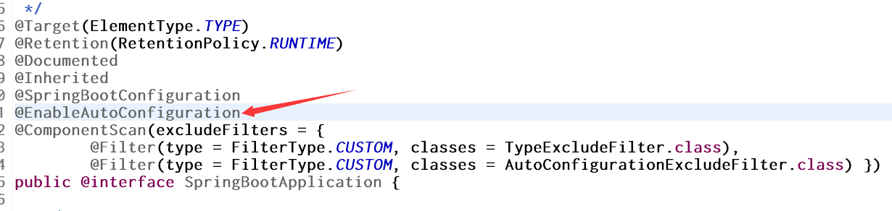
2、@EnableAutConfiguration的作用
- 在该注解中有一个@Import(AutoConfigurationImportSelector.class)的注解，这个注解的意思是引入AutoConfigurationImportSelector在这个类，这个类的作用是给容器导入组件，如图：
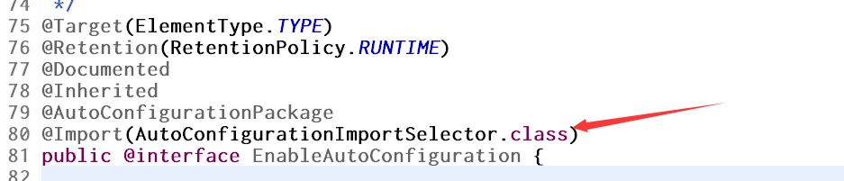
- 我们可以查看在AutoConfigurationImportSelector类中的内容，在这个类中的selectImports方法中有一个操作就是：List
configurations = getCandidateConfigurations(annotationMetadata,attributes);这是在获取候选的配置信息。
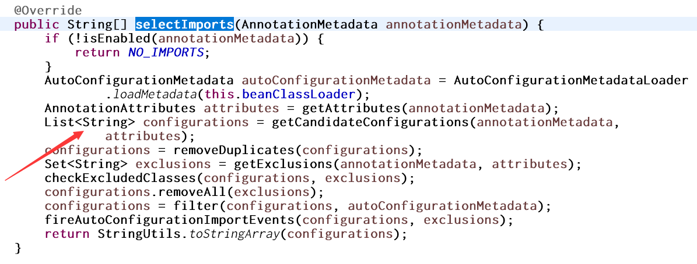
方法中有一个方法SpringFactoriesLoader.loadFactoryNames，扫描所有jar包类路径下 META-INF/spring.factories，把扫描到的这些文件的内容包装成properties对象，从properties中获取到EnableAutoConfiguration.class类（类名）对应的值，然后把他们添加在容器中：
List<String> configurations = SpringFactoriesLoader.loadFactoryNames(getSpringFactoriesLoaderFactoryClass(), getBeanClassLoader());
将 类路径下 META-INF/spring.factories 里面配置的所有EnableAutoConfiguration的值加入到了容器中；
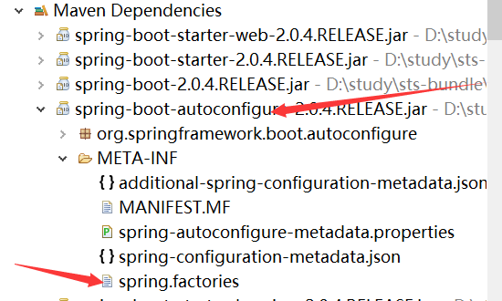
这些都是在spring-factories文件中的配置
# Auto Configure
org.springframework.boot.autoconfigure.EnableAutoConfiguration=\
org.springframework.boot.autoconfigure.admin.SpringApplicationAdminJmxAutoConfiguration,\
org.springframework.boot.autoconfigure.aop.AopAutoConfiguration,\
org.springframework.boot.autoconfigure.amqp.RabbitAutoConfiguration,\
org.springframework.boot.autoconfigure.batch.BatchAutoConfiguration,\
org.springframework.boot.autoconfigure.cache.CacheAutoConfiguration,\
org.springframework.boot.autoconfigure.cassandra.CassandraAutoConfiguration,\
org.springframework.boot.autoconfigure.cloud.CloudAutoConfiguration,\
org.springframework.boot.autoconfigure.context.ConfigurationPropertiesAutoConfiguration,\
org.springframework.boot.autoconfigure.context.MessageSourceAutoConfiguration,\
org.springframework.boot.autoconfigure.context.PropertyPlaceholderAutoConfiguration,\
org.springframework.boot.autoconfigure.couchbase.CouchbaseAutoConfiguration,\
org.springframework.boot.autoconfigure.dao.PersistenceExceptionTranslationAutoConfiguration,\
org.springframework.boot.autoconfigure.data.cassandra.CassandraDataAutoConfiguration,\
org.springframework.boot.autoconfigure.data.cassandra.CassandraReactiveDataAutoConfiguration,\
org.springframework.boot.autoconfigure.data.cassandra.CassandraReactiveRepositoriesAutoConfiguration,\
org.springframework.boot.autoconfigure.data.cassandra.CassandraRepositoriesAutoConfiguration,\
org.springframework.boot.autoconfigure.data.couchbase.CouchbaseDataAutoConfiguration,\
org.springframework.boot.autoconfigure.data.couchbase.CouchbaseReactiveDataAutoConfiguration,\
org.springframework.boot.autoconfigure.data.couchbase.CouchbaseReactiveRepositoriesAutoConfiguration,\
org.springframework.boot.autoconfigure.data.couchbase.CouchbaseRepositoriesAutoConfiguration,\
org.springframework.boot.autoconfigure.data.elasticsearch.ElasticsearchAutoConfiguration,\
org.springframework.boot.autoconfigure.data.elasticsearch.ElasticsearchDataAutoConfiguration,\
org.springframework.boot.autoconfigure.data.elasticsearch.ElasticsearchRepositoriesAutoConfiguration,\
org.springframework.boot.autoconfigure.data.jpa.JpaRepositoriesAutoConfiguration,\
org.springframework.boot.autoconfigure.data.ldap.LdapDataAutoConfiguration,\
org.springframework.boot.autoconfigure.data.ldap.LdapRepositoriesAutoConfiguration,\
org.springframework.boot.autoconfigure.data.mongo.MongoDataAutoConfiguration,\
org.springframework.boot.autoconfigure.data.mongo.MongoReactiveDataAutoConfiguration,\
org.springframework.boot.autoconfigure.data.mongo.MongoReactiveRepositoriesAutoConfiguration,\
org.springframework.boot.autoconfigure.data.mongo.MongoRepositoriesAutoConfiguration,\
org.springframework.boot.autoconfigure.data.neo4j.Neo4jDataAutoConfiguration,\
org.springframework.boot.autoconfigure.data.neo4j.Neo4jRepositoriesAutoConfiguration,\
org.springframework.boot.autoconfigure.data.solr.SolrRepositoriesAutoConfiguration,\
org.springframework.boot.autoconfigure.data.redis.RedisAutoConfiguration,\
org.springframework.boot.autoconfigure.data.redis.RedisReactiveAutoConfiguration,\
org.springframework.boot.autoconfigure.data.redis.RedisRepositoriesAutoConfiguration,\
org.springframework.boot.autoconfigure.data.rest.RepositoryRestMvcAutoConfiguration,\
org.springframework.boot.autoconfigure.data.web.SpringDataWebAutoConfiguration,\
org.springframework.boot.autoconfigure.elasticsearch.jest.JestAutoConfiguration,\
org.springframework.boot.autoconfigure.flyway.FlywayAutoConfiguration,\
org.springframework.boot.autoconfigure.freemarker.FreeMarkerAutoConfiguration,\
org.springframework.boot.autoconfigure.gson.GsonAutoConfiguration,\
org.springframework.boot.autoconfigure.h2.H2ConsoleAutoConfiguration,\
org.springframework.boot.autoconfigure.hateoas.HypermediaAutoConfiguration,\
org.springframework.boot.autoconfigure.hazelcast.HazelcastAutoConfiguration,\
org.springframework.boot.autoconfigure.hazelcast.HazelcastJpaDependencyAutoConfiguration,\
org.springframework.boot.autoconfigure.http.HttpMessageConvertersAutoConfiguration,\
org.springframework.boot.autoconfigure.http.codec.CodecsAutoConfiguration,\
org.springframework.boot.autoconfigure.influx.InfluxDbAutoConfiguration,\
org.springframework.boot.autoconfigure.info.ProjectInfoAutoConfiguration,\
org.springframework.boot.autoconfigure.integration.IntegrationAutoConfiguration,\
org.springframework.boot.autoconfigure.jackson.JacksonAutoConfiguration,\
org.springframework.boot.autoconfigure.jdbc.DataSourceAutoConfiguration,\
org.springframework.boot.autoconfigure.jdbc.JdbcTemplateAutoConfiguration,\
org.springframework.boot.autoconfigure.jdbc.JndiDataSourceAutoConfiguration,\
org.springframework.boot.autoconfigure.jdbc.XADataSourceAutoConfiguration,\
org.springframework.boot.autoconfigure.jdbc.DataSourceTransactionManagerAutoConfiguration,\
org.springframework.boot.autoconfigure.jms.JmsAutoConfiguration,\
org.springframework.boot.autoconfigure.jmx.JmxAutoConfiguration,\
org.springframework.boot.autoconfigure.jms.JndiConnectionFactoryAutoConfiguration,\
org.springframework.boot.autoconfigure.jms.activemq.ActiveMQAutoConfiguration,\
org.springframework.boot.autoconfigure.jms.artemis.ArtemisAutoConfiguration,\
org.springframework.boot.autoconfigure.groovy.template.GroovyTemplateAutoConfiguration,\
org.springframework.boot.autoconfigure.jersey.JerseyAutoConfiguration,\
org.springframework.boot.autoconfigure.jooq.JooqAutoConfiguration,\
org.springframework.boot.autoconfigure.jsonb.JsonbAutoConfiguration,\
org.springframework.boot.autoconfigure.kafka.KafkaAutoConfiguration,\
org.springframework.boot.autoconfigure.ldap.embedded.EmbeddedLdapAutoConfiguration,\
org.springframework.boot.autoconfigure.ldap.LdapAutoConfiguration,\
org.springframework.boot.autoconfigure.liquibase.LiquibaseAutoConfiguration,\
org.springframework.boot.autoconfigure.mail.MailSenderAutoConfiguration,\
org.springframework.boot.autoconfigure.mail.MailSenderValidatorAutoConfiguration,\
org.springframework.boot.autoconfigure.mongo.embedded.EmbeddedMongoAutoConfiguration,\
org.springframework.boot.autoconfigure.mongo.MongoAutoConfiguration,\
org.springframework.boot.autoconfigure.mongo.MongoReactiveAutoConfiguration,\
org.springframework.boot.autoconfigure.mustache.MustacheAutoConfiguration,\
org.springframework.boot.autoconfigure.orm.jpa.HibernateJpaAutoConfiguration,\
org.springframework.boot.autoconfigure.quartz.QuartzAutoConfiguration,\
org.springframework.boot.autoconfigure.reactor.core.ReactorCoreAutoConfiguration,\
org.springframework.boot.autoconfigure.security.servlet.SecurityAutoConfiguration,\
org.springframework.boot.autoconfigure.security.servlet.UserDetailsServiceAutoConfiguration,\
org.springframework.boot.autoconfigure.security.servlet.SecurityFilterAutoConfiguration,\
org.springframework.boot.autoconfigure.security.reactive.ReactiveSecurityAutoConfiguration,\
org.springframework.boot.autoconfigure.security.reactive.ReactiveUserDetailsServiceAutoConfiguration,\
org.springframework.boot.autoconfigure.sendgrid.SendGridAutoConfiguration,\
org.springframework.boot.autoconfigure.session.SessionAutoConfiguration,\
org.springframework.boot.autoconfigure.security.oauth2.client.OAuth2ClientAutoConfiguration,\
org.springframework.boot.autoconfigure.solr.SolrAutoConfiguration,\
org.springframework.boot.autoconfigure.thymeleaf.ThymeleafAutoConfiguration,\
org.springframework.boot.autoconfigure.transaction.TransactionAutoConfiguration,\
org.springframework.boot.autoconfigure.transaction.jta.JtaAutoConfiguration,\
org.springframework.boot.autoconfigure.validation.ValidationAutoConfiguration,\
org.springframework.boot.autoconfigure.web.client.RestTemplateAutoConfiguration,\
org.springframework.boot.autoconfigure.web.embedded.EmbeddedWebServerFactoryCustomizerAutoConfiguration,\
org.springframework.boot.autoconfigure.web.reactive.HttpHandlerAutoConfiguration,\
org.springframework.boot.autoconfigure.web.reactive.ReactiveWebServerFactoryAutoConfiguration,\
org.springframework.boot.autoconfigure.web.reactive.WebFluxAutoConfiguration,\
org.springframework.boot.autoconfigure.web.reactive.error.ErrorWebFluxAutoConfiguration,\
org.springframework.boot.autoconfigure.web.reactive.function.client.WebClientAutoConfiguration,\
org.springframework.boot.autoconfigure.web.servlet.DispatcherServletAutoConfiguration,\
org.springframework.boot.autoconfigure.web.servlet.ServletWebServerFactoryAutoConfiguration,\
org.springframework.boot.autoconfigure.web.servlet.error.ErrorMvcAutoConfiguration,\
org.springframework.boot.autoconfigure.web.servlet.HttpEncodingAutoConfiguration,\
org.springframework.boot.autoconfigure.web.servlet.MultipartAutoConfiguration,\
org.springframework.boot.autoconfigure.web.servlet.WebMvcAutoConfiguration,\
org.springframework.boot.autoconfigure.websocket.reactive.WebSocketReactiveAutoConfiguration,\
org.springframework.boot.autoconfigure.websocket.servlet.WebSocketServletAutoConfiguration,\
org.springframework.boot.autoconfigure.websocket.servlet.WebSocketMessagingAutoConfiguration,\
org.springframework.boot.autoconfigure.webservices.WebServicesAutoConfiguration
每一个这样的 xxxAutoConfiguration类都是容器中的一个组件，都加入到容器中；用他们来做自动配置；
3）、每一个自动配置类进行自动配置功能；
4）、以HttpEncodingAutoConfiguration（Http编码自动配置）为例解释自动配置原理；
@Configuration //表示这是一个配置类，以前编写的配置文件一样，也可以给容器中添加组件
@EnableConfigurationProperties(HttpEncodingProperties.class) //启动指定类的ConfigurationProperties功能；将配置文件中对应的值和HttpEncodingProperties绑定起来；并把HttpEncodingProperties加入到ioc容器中，就相当于之前写的person类
@ConditionalOnWebApplication //Spring底层@Conditional注解，根据不同的条件，如果满足指定的条件，整个配置类里面的配置就会生效；判断当前应用是否是web应用，如果是，当前配置类生效
@ConditionalOnClass(CharacterEncodingFilter.class) //判断当前项目有没有这个类CharacterEncodingFilter；SpringMVC中进行乱码解决的过滤器；
@ConditionalOnProperty(prefix = "spring.http.encoding", value = "enabled", matchIfMissing = true) //判断配置文件中是否存在某个配置 spring.http.encoding.enabled；如果不存在，判断也是成立的
//即使我们配置文件中不配置pring.http.encoding.enabled=true，也是默认生效的；
public class HttpEncodingAutoConfiguration {
//他已经和SpringBoot的配置文件映射了
private final HttpEncodingProperties properties;
//只有一个有参构造器的情况下，参数的值就会从容器中拿
public HttpEncodingAutoConfiguration(HttpEncodingProperties properties) {
this.properties = properties;
}
@Bean //给容器中添加一个组件，这个组件的某些值需要从properties中获取
@ConditionalOnMissingBean(CharacterEncodingFilter.class) //判断容器没有这个组件
public CharacterEncodingFilter characterEncodingFilter() {
CharacterEncodingFilter filter = new OrderedCharacterEncodingFilter();
filter.setEncoding(this.properties.getCharset().name());
filter.setForceRequestEncoding(this.properties.shouldForce(Type.REQUEST));
filter.setForceResponseEncoding(this.properties.shouldForce(Type.RESPONSE));
return filter;
}
根据当前不同的条件判断，决定这个配置类是否生效？
一但这个配置类生效；这个配置类就会给容器中添加各种组件；这些组件的属性是从对应的properties类中获取的，这些类里面的每一个属性又是和配置文件绑定的；这个类就类似于我们的person类
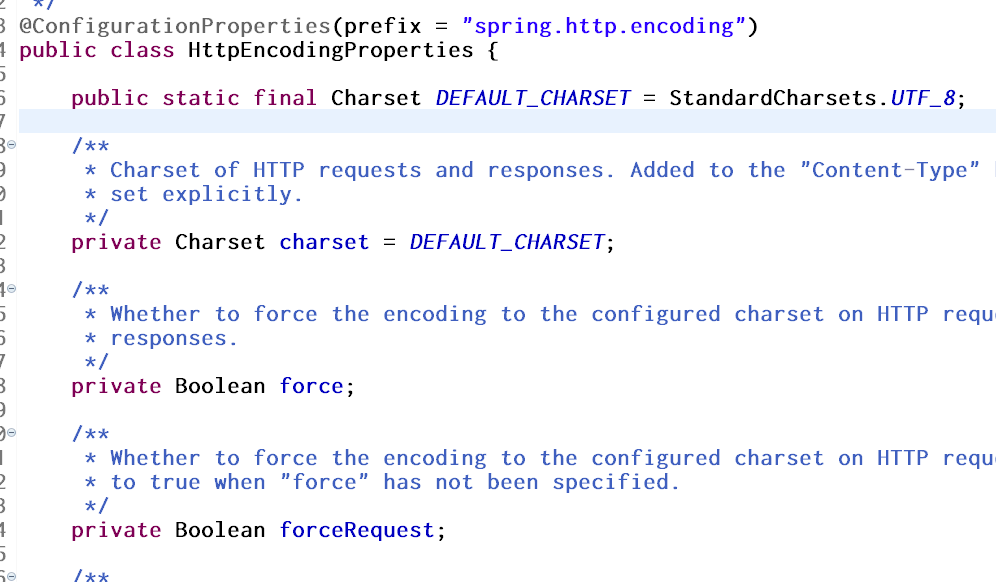
精髓：
1、SpringBoot启动会加载大量的自动配置类
2、我们看我们需要的功能有没有SpringBoot默认写好的自动配置类；
3、我们再来看这个自动配置类中到底配置了哪些组件（只要我们要用的组件有，我们就不需要再来配置了）
4、给容器中自动配置类添加组件的时候，会从properties类中获取某些属性。我们就可以在配置文件中指定这些属性的值；
xxxxAutoConfigurartion：自动配置类；给容器中添加组件
xxxxProperties:封装配置文件中相关属性；
10、细节
1、@Conditional派生注解（Spring注解版原生的@Conditional作用）
作用：必须是@Conditional指定的条件成立，才给容器中添加组件，配置配里面的所有内容才生效；
| @Conditional扩展注解 | 作用（判断是否满足当前指定条件） |
|---|---|
| @ConditionalOnJava | 系统的java版本是否符合要求 |
| @ConditionalOnBean | 容器中存在指定Bean； |
| @ConditionalOnMissingBean | 容器中不存在指定Bean； |
| @ConditionalOnExpression | 满足SpEL表达式指定 |
| @ConditionalOnClass | 系统中有指定的类 |
| @ConditionalOnMissingClass | 系统中没有指定的类 |
| @ConditionalOnSingleCandidate | 容器中只有一个指定的Bean，或者这个Bean是首选Bean |
| @ConditionalOnProperty | 系统中指定的属性是否有指定的值 |
| @ConditionalOnResource | 类路径下是否存在指定资源文件 |
| @ConditionalOnWebApplication | 当前是web环境 |
| @ConditionalOnNotWebApplication | 当前不是web环境 |
| @ConditionalOnJndi | JNDI存在指定项 |
自动配置类必须在一定的条件下才能生效；
我们怎么知道哪些自动配置类生效；
我们可以通过启用 debug=true属性；来让控制台打印自动配置报告，这样我们就可以很方便的知道哪些自动配置类生效；
=========================
AUTO-CONFIGURATION REPORT
=========================
Positive matches:（自动配置类启用的）
-----------------
DispatcherServletAutoConfiguration matched:
- @ConditionalOnClass found required class 'org.springframework.web.servlet.DispatcherServlet'; @ConditionalOnMissingClass did not find unwanted class (OnClassCondition)
- @ConditionalOnWebApplication (required) found StandardServletEnvironment (OnWebApplicationCondition)
Negative matches:（没有启动，没有匹配成功的自动配置类）
-----------------
ActiveMQAutoConfiguration:
Did not match:
- @ConditionalOnClass did not find required classes 'javax.jms.ConnectionFactory', 'org.apache.activemq.ActiveMQConnectionFactory' (OnClassCondition)
AopAutoConfiguration:
Did not match:
- @ConditionalOnClass did not find required classes 'org.aspectj.lang.annotation.Aspect', 'org.aspectj.lang.reflect.Advice' (OnClassCondition)
三、日志使用
1、日志框架
市面上的日志框架；
JUL、JCL、Jboss-logging、logback、log4j、log4j2、slf4j….
| 日志门面 （日志的抽象层） | 日志实现 |
|---|---|
| Log4j JUL（java.util.logging） Log4j2 Logback |
左边选一个门面（抽象层）、右边来选一个实现；
日志门面： SLF4J；
日志实现：Logback；
SpringBoot：底层是Spring框架，Spring框架默认是用JCL；
但是SpringBoot选用 SLF4j和logback
2、SLF4j使用
1、如何在系统中使用SLF4j https://www.slf4j.org
以后开发的时候，日志记录方法的调用，不应该来直接调用日志的实现类，而是调用日志抽象层里面的方法；
给系统里面导入slf4j的jar和 logback的实现jar
import org.slf4j.Logger;
import org.slf4j.LoggerFactory;
public class HelloWorld {
public static void main(String[] args) {
Logger logger = LoggerFactory.getLogger(HelloWorld.class);
logger.info("Hello World");
}
}
图示：

每一个日志的实现框架都有自己的配置文件。使用slf4j以后，配置文件还是做成日志实现框架自己本身的配置文件；
2、遗留问题
a（slf4j+logback）: Spring（commons-logging）、Hibernate（jboss-logging）、MyBatis、xxxx
统一日志记录，即使是别的框架和我一起统一使用slf4j进行输出？

如何让系统中所有的日志都统一到slf4j；
1、将系统中其他日志框架先排除出去；
2、用中间包来替换原有的日志框架；
3、我们导入slf4j其他的实现
4、springboot的日志关系
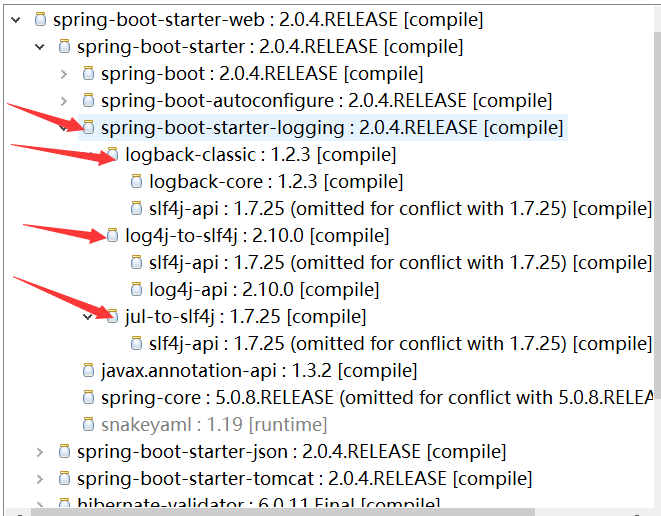
在spring-boot-starter-web中依赖了spring-boot-starter包 在下面有spring-boot-starter-logging，在下面就有很多替换的包，SpringBoot底层也是使用slf4j+logback的方式进行日志记录，SpringBoot也把其他的日志都替换成了slf4j。比如log4j-to-slf4j和jul-to-slf4j,
下面是转化的底层实现
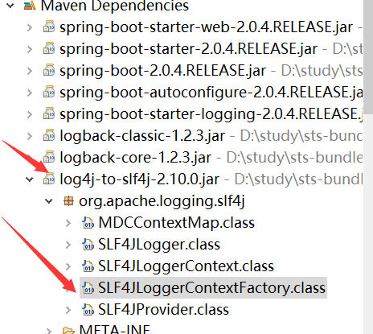
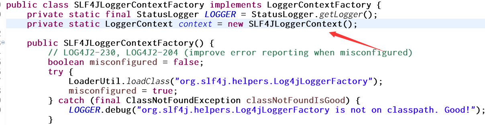
如果我们要引入其他框架一定要把这个框架的默认日志依赖移除掉
Spring框架用的是commons-logging；
<dependency>
<groupId>org.springframework</groupId>
<artifactId>spring-core</artifactId>
<exclusions>
<exclusion>
<groupId>commons-logging</groupId>
<artifactId>commons-logging</artifactId>
</exclusion>
</exclusions>
</dependency>
SpringBoot能自动适配所有的日志，而且底层使用slf4j+logback的方式记录日志，引入其他框架的时候，只需要把这个框架依赖的日志框架排除掉即可，比如在上面就移除了commons-logging
5、日志使用
1、默认配置
SpringBoot默认帮我们配置好了日志；
//记录器
Logger logger = LoggerFactory.getLogger(getClass());
@Test
public void contextLoads() {
//System.out.println();
//日志的级别；
//由低到高 trace<debug<info<warn<error
//可以调整输出的日志级别；日志就只会在这个级别以以后的高级别生效
logger.trace("这是trace日志...");
logger.debug("这是debug日志...");
//SpringBoot默认给我们使用的是info级别的，没有指定级别的就用SpringBoot默认规定的级别；root级别
logger.info("这是info日志...");
logger.warn("这是warn日志...");
logger.error("这是error日志...");
}
日志输出格式：
%d表示日期时间，
%thread表示线程名，
%-5level：级别从左显示5个字符宽度
%logger{50} 表示logger名字最长50个字符，否则按照句点分割。
%msg：日志消息，
%n是换行符
-->
%d{yyyy-MM-dd HH:mm:ss.SSS} [%thread] %-5level %logger{50} - %msg%n
SpringBoot修改日志的默认配置
logging.level.com.atguigu=trace
#logging.path=
# 不指定路径在当前项目下生成springboot.log日志
# 可以指定完整的路径；
#logging.file=G:/springboot.log
# 在当前磁盘的根路径下创建spring文件夹和里面的log文件夹；使用 spring.log 作为默认文件
logging.path=/spring/log
# 在控制台输出的日志的格式
logging.pattern.console=%d{yyyy-MM-dd} [%thread] %-5level %logger{50} - %msg%n
# 指定文件中日志输出的格式
logging.pattern.file=%d{yyyy-MM-dd} === [%thread] === %-5level === %logger{50} ==== %msg%n
| logging.file | logging.path | Example | Description |
|---|---|---|---|
| (none) | (none) | 只在控制台输出 | |
| 指定文件名 | (none) | my.log | 输出日志到my.log文件 |
| (none) | 指定目录 | /var/log | 输出到指定目录的 spring.log 文件中 |
2、指定配置
给类路径下即source下放上每个日志框架自己的配置文件即可；SpringBoot就不使用他默认配置的了
| Logging System | Customization |
|---|---|
| Logback | logback-spring.xml, logback-spring.groovy, logback.xml or logback.groovy |
| Log4j2 | log4j2-spring.xml or log4j2.xml |
| JDK (Java Util Logging) | logging.properties |
logback.xml：直接就被日志框架识别了；
logback-spring.xml：日志框架就不直接加载日志的配置项，由SpringBoot解析日志配置，可以使用SpringBoot的高级Profile功能
最好是使用logback-spring.xml
<springProfile name="staging">
<!-- configuration to be enabled when the "staging" profile is active -->
可以指定某段配置只在某个环境下生效
</springProfile>
如：
<appender name="stdout" class="ch.qos.logback.core.ConsoleAppender">
<!--
日志输出格式：
%d表示日期时间，
%thread表示线程名，
%-5level：级别从左显示5个字符宽度
%logger{50} 表示logger名字最长50个字符，否则按照句点分割。
%msg：日志消息，
%n是换行符
-->
<layout class="ch.qos.logback.classic.PatternLayout">
<springProfile name="dev">
<!-- 在dev模式下使用的格式 -->
<pattern>%d{yyyy-MM-dd HH:mm:ss.SSS} ----> [%thread] ---> %-5level %logger{50} - %msg%n</pattern>
</springProfile>
<springProfile name="!dev">
<pattern>%d{yyyy-MM-dd HH:mm:ss.SSS} ==== [%thread] ==== %-5level %logger{50} - %msg%n</pattern>
</springProfile>
</layout>
</appender>
如果使用logback.xml作为日志配置文件，还要使用profile功能，会有以下错误
no applicable action for [springProfile]
6、切换日志框架
可以按照slf4j的日志适配图，进行相关的切换；
slf4j+log4j的方式；排除掉logback的依赖和log4j转换为slf4j的依赖
<dependency>
<groupId>org.springframework.boot</groupId>
<artifactId>spring-boot-starter-web</artifactId>
<exclusions>
<exclusion>
<artifactId>logback-classic</artifactId>
<groupId>ch.qos.logback</groupId>
</exclusion>
<exclusion>
<artifactId>log4j-over-slf4j</artifactId>
<groupId>org.slf4j</groupId>
</exclusion>
</exclusions>
</dependency>
<dependency>
<groupId>org.slf4j</groupId>
<artifactId>slf4j-log4j12</artifactId>
</dependency>
切换为log4j2，排除掉spring-boot-starter-logging 这是使用的slf4j和logback,添加上spring-boot-starter-log4j2
<dependency>
<groupId>org.springframework.boot</groupId>
<artifactId>spring-boot-starter-web</artifactId>
<exclusions>
<exclusion>
<artifactId>spring-boot-starter-logging</artifactId>
<groupId>org.springframework.boot</groupId>
</exclusion>
</exclusions>
</dependency>
<dependency>
<groupId>org.springframework.boot</groupId>
<artifactId>spring-boot-starter-log4j2</artifactId>
</dependency>
四、Web开发
1、简介
使用SpringBoot；
1）、创建SpringBoot应用，选中我们需要的模块；
2）、SpringBoot已经默认将这些场景配置好了，只需要在配置文件中指定少量配置就可以运行起来
3）、自己编写业务代码；
自动配置原理？
这个场景SpringBoot帮我们配置了什么？能不能修改？能修改哪些配置？能不能扩展？xxx
xxxxAutoConfiguration：帮我们给容器中自动配置组件；
xxxxProperties:配置类来封装配置文件的内容；
2、SpringBoot对静态资源的映射规则；
@ConfigurationProperties(prefix = "spring.resources", ignoreUnknownFields = false)
public class ResourceProperties implements ResourceLoaderAware {
//可以设置和静态资源有关的参数，缓存时间等
WebMvcAuotConfiguration：
@Override
public void addResourceHandlers(ResourceHandlerRegistry registry) {
if (!this.resourceProperties.isAddMappings()) {
logger.debug("Default resource handling disabled");
return;
}
Integer cachePeriod = this.resourceProperties.getCachePeriod();
if (!registry.hasMappingForPattern("/webjars/**")) {
customizeResourceHandlerRegistration(
registry.addResourceHandler("/webjars/**")
.addResourceLocations(
"classpath:/META-INF/resources/webjars/")
.setCachePeriod(cachePeriod));
}
String staticPathPattern = this.mvcProperties.getStaticPathPattern();
//静态资源文件夹映射
if (!registry.hasMappingForPattern(staticPathPattern)) {
customizeResourceHandlerRegistration(
registry.addResourceHandler(staticPathPattern)
.addResourceLocations(
this.resourceProperties.getStaticLocations())
.setCachePeriod(cachePeriod));
}
}
//配置欢迎页映射
@Bean
public WelcomePageHandlerMapping welcomePageHandlerMapping(
ResourceProperties resourceProperties) {
return new WelcomePageHandlerMapping(resourceProperties.getWelcomePage(),
this.mvcProperties.getStaticPathPattern());
}
//配置喜欢的图标
@Configuration
@ConditionalOnProperty(value = "spring.mvc.favicon.enabled", matchIfMissing = true)
public static class FaviconConfiguration {
private final ResourceProperties resourceProperties;
public FaviconConfiguration(ResourceProperties resourceProperties) {
this.resourceProperties = resourceProperties;
}
@Bean
public SimpleUrlHandlerMapping faviconHandlerMapping() {
SimpleUrlHandlerMapping mapping = new SimpleUrlHandlerMapping();
mapping.setOrder(Ordered.HIGHEST_PRECEDENCE + 1);
//所有 **/favicon.ico
mapping.setUrlMap(Collections.singletonMap("**/favicon.ico",
faviconRequestHandler()));
return mapping;
}
@Bean
public ResourceHttpRequestHandler faviconRequestHandler() {
ResourceHttpRequestHandler requestHandler = new ResourceHttpRequestHandler();
requestHandler
.setLocations(this.resourceProperties.getFaviconLocations());
return requestHandler;
}
}
1）、所有 /webjars/** ，都去 classpath:/META-INF/resources/webjars/ 找资源；
webjars：以jar包的方式引入静态资源；
比如我们加入了jquery的依赖,如下：
<!--引入jquery-webjar-->在访问的时候只需要写webjars下面资源的名称即可
<dependency>
<groupId>org.webjars</groupId>
<artifactId>jquery</artifactId>
<version>3.3.1</version>
</dependency>
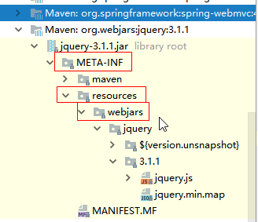
当我们访问localhost:8080/webjars/jquery/3.3.1/jquery.js路径的时候就能访问到jquery文件的东西
2）、”/**” 访问当前项目的任何资源，都去（静态资源的文件夹）找映射
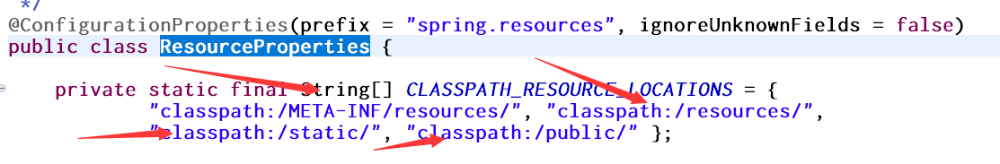
"classpath:/META-INF/resources/",
"classpath:/resources/",
"classpath:/static/",
"classpath:/public/"
"/"：当前项目的根路径
localhost:8080/abc === 去静态资源文件夹里面找abc
3）、欢迎页； 静态资源文件夹下的所有index.html页面；被”/**”映射
localhost:8080/ 找index页面
4）、所有的 **/favicon.ico 图标都是在静态资源文件下找。
总结：就是使用webjars/**就都去 classpath:/META-INF/resources/webjars/ 找资源；
使用/** 就是去静态文件下找资源
3、模板引擎

SpringBoot推荐的Thymeleaf；语法更简单，功能更强大；
1、引入thymeleaf模板引擎
<dependency>
<groupId>org.springframework.boot</groupId>
<artifactId>spring-boot-starter-thymeleaf</artifactId>
</dependency>
切换thymeleaf版本
<properties>
<thymeleaf.version>3.0.9.RELEASE</thymeleaf.version>
<!-- 布局功能的支持程序 thymeleaf3主程序 layout2以上版本 -->
<!-- thymeleaf2 layout1-->
<thymeleaf-layout-dialect.version>2.2.2</thymeleaf-layout-dialect.version>
</properties>
2、Thymeleaf使用
在spring-boot-autoconfigure-2.0.4.RELEASE.jar中有对Thymeleaf的具体配置
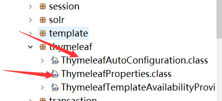
@Configuration
@EnableConfigurationProperties(ThymeleafProperties.class)
@ConditionalOnClass(TemplateMode.class)
@AutoConfigureAfter({ WebMvcAutoConfiguration.class, WebFluxAutoConfiguration.class })
public class ThymeleafAutoConfiguration {
@Configuration
@ConditionalOnMissingBean(name = "defaultTemplateResolver")
static class DefaultTemplateResolverConfiguration {
private static final Log logger = LogFactory
.getLog(DefaultTemplateResolverConfiguration.class);
private final ThymeleafProperties properties;// 这是对Thymeleaf的具体的配置类
private final ApplicationContext applicationContext;
@ConfigurationProperties(prefix = "spring.thymeleaf")
public class ThymeleafProperties {
private static final Charset DEFAULT_ENCODING = StandardCharsets.UTF_8;
public static final String DEFAULT_PREFIX = "classpath:/templates/"; // 这是读取thml的前缀
public static final String DEFAULT_SUFFIX = ".html";// 这是后缀
就是读取classpath:/templates/ 内路径下的templates文件夹中的文件
只要我们把HTML页面放在classpath:/templates/，thymeleaf就能自动渲染；
- 导入thymeleaf的命名空间 ，导入就会有语法提示
3、语法规则
1）、th:text；改变当前元素里面的文本内容；
th：任意html属性；来替换原生属性的值
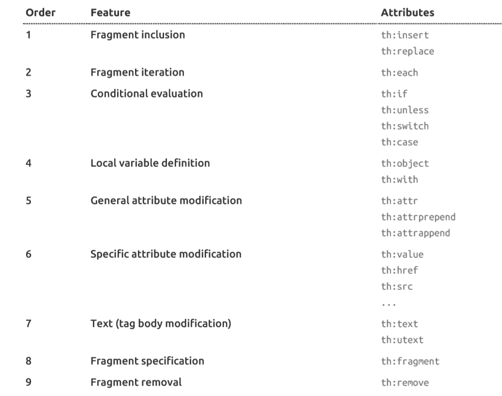
2）、表达式？
Simple expressions:（表达式语法）
Variable Expressions: ${...}：获取变量值；OGNL；
1）、获取对象的属性、调用方法
2）、使用内置的基本对象：
#ctx : the context object.
#vars: the context variables.
#locale : the context locale.
#request : (only in Web Contexts) the HttpServletRequest object.
#response : (only in Web Contexts) the HttpServletResponse object.
#session : (only in Web Contexts) the HttpSession object.
#servletContext : (only in Web Contexts) the ServletContext object.
${session.foo}
3）、内置的一些工具对象：
#execInfo : information about the template being processed.
#messages : methods for obtaining externalized messages inside variables expressions, in the same way as they would be obtained using #{…} syntax.
#uris : methods for escaping parts of URLs/URIs
#conversions : methods for executing the configured conversion service (if any).
#dates : methods for java.util.Date objects: formatting, component extraction, etc.
#calendars : analogous to #dates , but for java.util.Calendar objects.
#numbers : methods for formatting numeric objects.
#strings : methods for String objects: contains, startsWith, prepending/appending, etc.
#objects : methods for objects in general.
#bools : methods for boolean evaluation.
#arrays : methods for arrays.
#lists : methods for lists.
#sets : methods for sets.
#maps : methods for maps.
#aggregates : methods for creating aggregates on arrays or collections.
#ids : methods for dealing with id attributes that might be repeated (for example, as a result of an iteration).
Selection Variable Expressions: *{...}：选择表达式：和${}在功能上是一样；
补充：配合 th:object="${session.user}：
<div th:object="${session.user}">
<p>Name: <span th:text="*{firstName}">Sebastian</span>.</p>
<p>Surname: <span th:text="*{lastName}">Pepper</span>.</p>
<p>Nationality: <span th:text="*{nationality}">Saturn</span>.</p>
</div>
Message Expressions: #{...}：获取国际化内容
Link URL Expressions: @{...}：定义URL；
@{/order/process(execId=${execId},execType='FAST')}
Fragment Expressions: ~{...}：片段引用表达式
<div th:insert="~{commons :: main}">...</div>
Literals（字面量）
Text literals: 'one text' , 'Another one!' ,…
Number literals: 0 , 34 , 3.0 , 12.3 ,…
Boolean literals: true , false
Null literal: null
Literal tokens: one , sometext , main ,…
Text operations:（文本操作）
String concatenation: +
Literal substitutions: |The name is ${name}|
Arithmetic operations:（数学运算）
Binary operators: + , - , * , / , %
Minus sign (unary operator): -
Boolean operations:（布尔运算）
Binary operators: and , or
Boolean negation (unary operator): ! , not
Comparisons and equality:（比较运算）
Comparators: > , < , >= , <= ( gt , lt , ge , le )
Equality operators: == , != ( eq , ne )
Conditional operators:条件运算（三元运算符）
If-then: (if) ? (then)
If-then-else: (if) ? (then) : (else)
Default: (value) ?: (defaultvalue)
Special tokens:
No-Operation: _
4、SpringMVC自动配置
1、Spring MVC auto-configuration
Spring Boot provides auto-configuration for Spring MVC that works well with most applications.
Spring Boot 提供了很多自动配置的默认配置在springmv中
The auto-configuration adds the following features on top of Spring’s defaults:
Inclusion of
ContentNegotiatingViewResolverandBeanNameViewResolverbeans.在spring-boot-autoconfigure-2.0.4.RELEASE.jar中的WebMvcAutoConfiguration.class中
@Bean @ConditionalOnBean(ViewResolver.class) @ConditionalOnMissingBean(name = "viewResolver", value = ContentNegotiatingViewResolver.class) public ContentNegotiatingViewResolver viewResolver(BeanFactory beanFactory) { ContentNegotiatingViewResolver resolver = new ContentNegotiatingViewResolver(); resolver.setContentNegotiationManager( beanFactory.getBean(ContentNegotiationManager.class)); // ContentNegotiatingViewResolver uses all the other view resolvers to locate // a view so it should have a high precedence resolver.setOrder(Ordered.HIGHEST_PRECEDENCE); return resolver; } // 这里就是在加载ViewResolver视图解析器。public class ContentNegotiatingViewResolver extends WebApplicationObjectSupport implements ViewResolver, Ordered, InitializingBean { @Nullable private ContentNegotiationManager contentNegotiationManager; private final ContentNegotiationManagerFactoryBean cnmFactoryBean = new ContentNegotiationManagerFactoryBean(); private boolean useNotAcceptableStatusCode = false; @Nullable private List<View> defaultViews; @Nullable private List<ViewResolver> viewResolvers;// 这里就会得到所有的ViewResolver包括我们自己添加的viewResolver private int order = Ordered.HIGHEST_PRECEDENCE;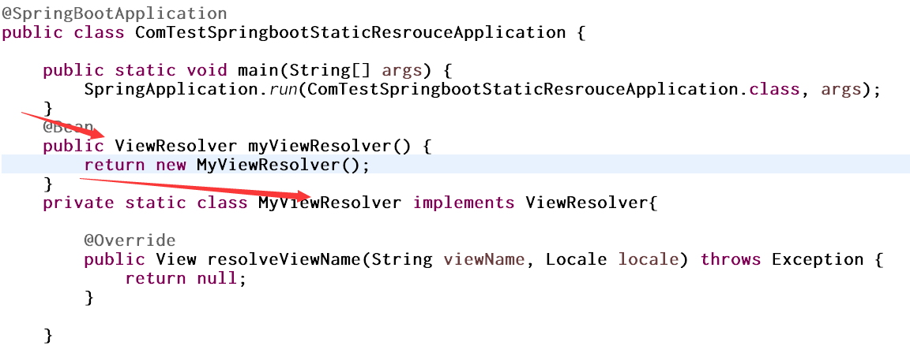
定义了之后在我们访问的时候，dispatcherServlet dedug时就可以看到，就会加载我们自己的ViewResolver
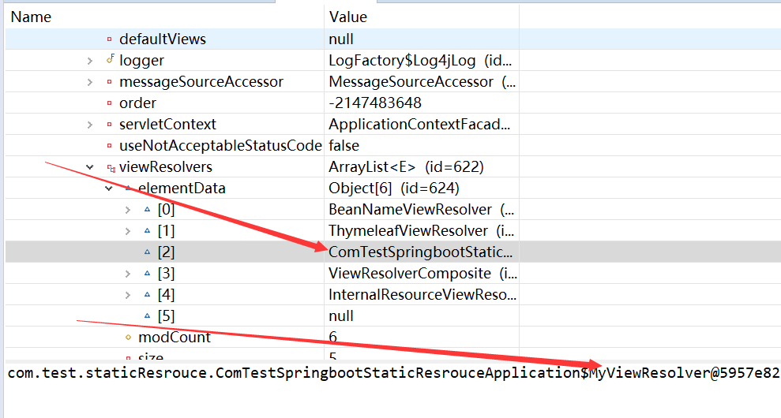
自动配置了ViewResolver（视图解析器：根据方法的返回值得到视图对象（View），视图对象决定如何渲染页面（转发？重定向？））
ContentNegotiatingViewResolver：组合所有的视图解析器；
如何定制：我们可以自己给容器中添加一个视图解析器；自动的将其组合进来；
Support for serving static resources, including support for WebJars (see below).
静态资源文件夹路径,webjars
Automatic registration of
Converter,GenericConverter,Formatterbeans. Converter：转换器； public String hello(User user)：类型转换使用Converter
Formatter` 格式化器； 2017.12.17===Date；
@Bean @ConditionalOnProperty(prefix = "spring.mvc", name = "date-format")//在文件中配置日期格式化的规则 public Formatter<Date> dateFormatter() { return new DateFormatter(this.mvcProperties.getDateFormat());//日期格式化组件 } 同样如ViewResolver 自己添加的格式化器转换器，我们只需要放在容器中即可
Automatic registration of
MessageCodesResolver(see below).定义错误代码生成规则@Override public MessageCodesResolver getMessageCodesResolver() { if (this.mvcProperties.getMessageCodesResolverFormat() != null) { DefaultMessageCodesResolver resolver = new DefaultMessageCodesResolver(); resolver.setMessageCodeFormatter( this.mvcProperties.getMessageCodesResolverFormat()); return resolver; } return null; } @Override public void addFormatters(FormatterRegistry registry) { for (Converter<?, ?> converter : getBeansOfType(Converter.class)) { registry.addConverter(converter); } for (GenericConverter converter : getBeansOfType(GenericConverter.class)) { registry.addConverter(converter); } for (Formatter<?> formatter : getBeansOfType(Formatter.class)) { registry.addFormatter(formatter); } } private <T> Collection<T> getBeansOfType(Class<T> type) { return this.beanFactory.getBeansOfType(type).values(); }// 这是生成错误代码规则器 public enum Format implements MessageCodeFormatter { /** * Prefix the error code at the beginning of the generated message code. e.g.: * {@code errorCode + "." + object name + "." + field} */ PREFIX_ERROR_CODE { @Override public String format(String errorCode, @Nullable String objectName, @Nullable String field) { return toDelimitedString(errorCode, objectName, field); } }, /** * Postfix the error code at the end of the generated message code. e.g.: * {@code object name + "." + field + "." + errorCode} */ POSTFIX_ERROR_CODE { @Override public String format(String errorCode, @Nullable String objectName, @Nullable String field) { return toDelimitedString(objectName, field, errorCode); } };同样如ViewResolver 自己添加的格式化器转换器，我们只需要放在容器中即可
Support for
HttpMessageConverters(see below).HttpMessageConverter：SpringMVC用来转换Http请求和响应的；User—Json；
HttpMessageConverters是从容器中确定；获取所有的HttpMessageConverter；public WebMvcAutoConfigurationAdapter(ResourceProperties resourceProperties, WebMvcProperties mvcProperties, ListableBeanFactory beanFactory, ObjectProvider<HttpMessageConverters> messageConvertersProvider, ObjectProvider<ResourceHandlerRegistrationCustomizer> resourceHandlerRegistrationCustomizerProvider) { this.resourceProperties = resourceProperties; this.mvcProperties = mvcProperties; this.beanFactory = beanFactory; this.messageConvertersProvider = messageConvertersProvider; this.resourceHandlerRegistrationCustomizer = resourceHandlerRegistrationCustomizerProvider .getIfAvailable(); }
Static
index.htmlsupport. // 访问欢迎页面Custom
Faviconsupport (see below). // 访问图标Automatic use of a
ConfigurableWebBindingInitializerbean (see below). 初始化webdatabinder初始化web数据的绑定器，绑定数据到自己的类 请求数据——–>JavaBean；
@Override protected ConfigurableWebBindingInitializer getConfigurableWebBindingInitializer() { try { return this.beanFactory.getBean(ConfigurableWebBindingInitializer.class); } // ConfigurableWebBindingInitializer.class 中的initBinder就是在绑定数据 catch (NoSuchBeanDefinitionException ex) { return super.getConfigurableWebBindingInitializer(); } }
2、扩展springmvc
以前在我们配置springmvc的时候，是在spring-mvc.xml中去配置比如
<mvc:view-controller path="/hello" view-name="success"/> <!-- 配置一个视图的解析器 -->
<mvc:interceptors>
<mvc:interceptor>
<mvc:mapping path="/hello"/>
<bean></bean>
</mvc:interceptor>
<!--配置一个拦截器-->
</mvc:interceptors>
现在在springboot中我们可以去编写一个配置类，是WebMvcConfigurerAdapter类型；不能标注@EnableWebMvc。就会既保留原有的配置，又会实现我们自己的配置。
@Configuration
public class MyConfig implements WebMvcConfigurer{
public void addViewControllers(ViewControllerRegistry registry) {
// 去设置在一个路径为/test controller中的返回的视图名为index的页面
// setViewName("index")也是根据对Thymeleaf的具体的配置类的路径在classpath:templates下
registry.addViewController("/test").setViewName("index");
}
原理：
WebMvcAutoConfiguration是SpringMVC的自动配置类,在该类中有一个WebMvcAutoConfigurationAdapter的静态内部类，该类导入了一个EnableWebMvcConfiguration.class的类，也是一个配置类
@Configuration
public static class EnableWebMvcConfiguration extends DelegatingWebMvcConfiguration {
private final WebMvcConfigurerComposite configurers = new WebMvcConfigurerComposite();
在它的父类DelegatingWebMvcConfiguration中 ,在他的setConfigurers方法中就会加上所有的关于springmvc 的WebMvcConfigurer配置类。
@Configuration
public class DelegatingWebMvcConfiguration extends WebMvcConfigurationSupport {
private final WebMvcConfigurerComposite configurers = new WebMvcConfigurerComposite();
@Autowired(required = false)
public void setConfigurers(List<WebMvcConfigurer> configurers) {
if (!CollectionUtils.isEmpty(configurers)) {
this.configurers.addWebMvcConfigurers(configurers);
}
}
// Defined as a nested config to ensure WebMvcConfigurer is not read when not
// on the classpath
@Configuration
@Import(EnableWebMvcConfiguration.class)
@EnableConfigurationProperties({ WebMvcProperties.class, ResourceProperties.class })
@Order(0)
public static class WebMvcAutoConfigurationAdapter
implements WebMvcConfigurer, ResourceLoaderAware {
容器中所有的WebMvcConfigurer都会一起起作用；
我们的配置类也会被调用；
效果：SpringMVC的自动配置和我们的扩展配置都会起作用；
If you want to keep Spring Boot MVC features, and you just want to add additional MVC configuration (interceptors, formatters, view controllers etc.) you can add your own @Configuration class of type WebMvcConfigurerAdapter, but without @EnableWebMvc. If you wish to provide custom instances of RequestMappingHandlerMapping, RequestMappingHandlerAdapter or ExceptionHandlerExceptionResolver you can declare a WebMvcRegistrationsAdapter instance providing such components.
If you want to take complete control of Spring MVC, you can add your own @Configuration annotated with @EnableWebMvc.
3、全面接管SpringMVC
SpringBoot对SpringMVC的自动配置不需要了，所有都是我们自己配置；所有的SpringMVC的自动配置都失效了
我们需要在配置类中添加@EnableWebMvc即可；
//使用WebMvcConfigurerAdapter可以来扩展SpringMVC的功能
@EnableWebMvc
@Configuration
public class MyMvcConfig extends WebMvcConfigurerAdapter {
@Override
public void addViewControllers(ViewControllerRegistry registry) {
// super.addViewControllers(registry);
//浏览器发送 /atguigu 请求来到 success
registry.addViewController("/atguigu").setViewName("success");
}
}
原理：
为什么@EnableWebMvc自动配置就失效了；
1）@EnableWebMvc的核心，在上面导入了一个springmv最基本的配置类。DelegatingWebMvcConfiguration.class包含了异步、拦截器、转换器等等
@Import(DelegatingWebMvcConfiguration.class)
public @interface EnableWebMvc {
2）、DelegatingWebMvcConfiguration继承了WebMvcConfigurationSupport
@Configuration
public class DelegatingWebMvcConfiguration extends WebMvcConfigurationSupport {
3）、
@Configuration
@ConditionalOnWebApplication
@ConditionalOnClass({ Servlet.class, DispatcherServlet.class,
WebMvcConfigurerAdapter.class })
// 容器中没有这个组件的时候，这个自动配置类才生效，所以我们配置了@EnableWebMvc后就会有WebMvcConfigurationSupport类
@ConditionalOnMissingBean(WebMvcConfigurationSupport.class)
@AutoConfigureOrder(Ordered.HIGHEST_PRECEDENCE + 10)
@AutoConfigureAfter({ DispatcherServletAutoConfiguration.class,
ValidationAutoConfiguration.class })
public class WebMvcAutoConfiguration {
4）、@EnableWebMvc将WebMvcConfigurationSupport组件导入进来；
5）、导入的WebMvcConfigurationSupport只是SpringMVC最基本的功能；
5、如何修改SpringBoot的默认配置
模式：
1）、SpringBoot在自动配置很多组件的时候，先看容器中有没有用户自己配置的（@Bean、@Component）如果有就用用户配置的，如果没有，才自动配置；如果有些组件可以有多个（ViewResolver）将用户配置的和自己默认的组合起来；
2）、在SpringBoot中会有非常多的xxxConfigurer帮助我们进行扩展配置
3）、在SpringBoot中会有很多的xxxCustomizer帮助我们进行定制配置
6、RestfulCRUD
1、默认访问首页
@Configuration
public class MyConfig implements WebMvcConfigurer{
public void addViewControllers(ViewControllerRegistry registry) {
// 去设置在一个路径为/test controller中的返回的视图名为index的页面
// setViewName("index")也是根据对Thymeleaf的具体的配置类的路径在classpath:templates下
registry.addViewController("/test").setViewName("index");
}
// 自动会加载去访问根路径的时候加载登录页面
// 所有的WebMvcConfigurer都会被加入默认配置
@Bean
public WebMvcConfigurer getWebMvcConfigurerAdapter() {
WebMvcConfigurer webMvcConfigurerAdapter = new WebMvcConfigurer() {
@Override
public void addViewControllers(ViewControllerRegistry registry) {
registry.addViewController("/").setViewName("login");
registry.addViewController("/login.html").setViewName("login");
}
};
return webMvcConfigurerAdapter;
}
2、国际化
1）编写国际化配置文件；
2）使用ResourceBundleMessageSource管理国际化资源文件
3）在页面使用fmt:message取出国际化内容
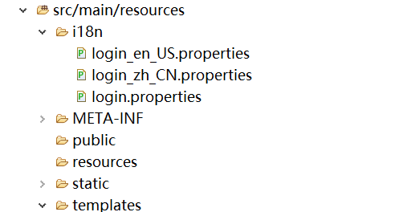
在login.properties中为默认的配置
login.tip=请登录~
login.username=用户名~
login.password=密码~
login.sign=登录~
login.remember=记住密码~
login_en_US.properties为英语版
login.tip=Please sign in
login.username=Username
login.password=Password
login.sign=Sign In
login.remember=Remeenber Me
login_zh_CN.properties为中文版
login.tip=请登录
login.username=用户名
login.password=密码
login.sign=登录
login.remember=记住密码
在springboot中自动帮我们配置好了国际化资源文件的组件, 在
@Configuration
@ConditionalOnMissingBean(value = MessageSource.class, search = SearchStrategy.CURRENT)
@AutoConfigureOrder(Ordered.HIGHEST_PRECEDENCE)
@Conditional(ResourceBundleCondition.class)
@EnableConfigurationProperties
public class MessageSourceAutoConfiguration {
private static final Resource[] NO_RESOURCES = {};
/**
* Comma-separated list of basenames (essentially a fully-qualified classpath
* location), each following the ResourceBundle convention with relaxed support for
* slash based locations. If it doesn't contain a package qualifier (such as
* "org.mypackage"), it will be resolved from the classpath root.
*/
// 在这里它引入了一个MessageSourceProperties,如下，
@Bean
@ConfigurationProperties(prefix = "spring.messages")
public MessageSourceProperties messageSourceProperties() {
return new MessageSourceProperties();
}
@Bean
public MessageSource messageSource() {
MessageSourceProperties properties = messageSourceProperties();
ResourceBundleMessageSource messageSource = new ResourceBundleMessageSource();
if (StringUtils.hasText(properties.getBasename())) {
// 设置国际化资源文件的基础名（去掉语言国家代码的）
messageSource.setBasenames(StringUtils.commaDelimitedListToStringArray(
StringUtils.trimAllWhitespace(properties.getBasename())));
}
if (properties.getEncoding() != null) {
messageSource.setDefaultEncoding(properties.getEncoding().name());
}
messageSource.setFallbackToSystemLocale(properties.isFallbackToSystemLocale());
Duration cacheDuration = properties.getCacheDuration();
if (cacheDuration != null) {
messageSource.setCacheMillis(cacheDuration.toMillis());
}
messageSource.setAlwaysUseMessageFormat(properties.isAlwaysUseMessageFormat());
messageSource.setUseCodeAsDefaultMessage(properties.isUseCodeAsDefaultMessage());
return messageSource;
}
MessageSourceProperties
public class MessageSourceProperties {
/**
* Comma-separated list of basenames (essentially a fully-qualified classpath
* location), each following the ResourceBundle convention with relaxed support for
* slash based locations. If it doesn't contain a package qualifier (such as
* "org.mypackage"), it will be resolved from the classpath root.
*/
// 默认的国际化文件的基础名
// 我们的配置文件可以直接放在类路径下叫messages.properties；
private String basename = "messages";
/**
* Message bundles encoding.
*/
private Charset encoding = StandardCharsets.UTF_8;
/**
* Loaded resource bundle files cache duration. When not set, bundles are cached
* forever. If a duration suffix is not specified, seconds will be used.
*/
相当于我们直接使用国际化的功能时直接在类路径中以messages.properties就可以了。
如果要找到我们自己的如：login.properties 需要在Application.properties中加入
spring.messages.basename=i18n.login
在Thymeleaf中就可以使用th:text=”#{}”来取值
<!DOCTYPE html>
<html lang="en" xmlns:th="http://www.thymeleaf.org">
<head>
<meta http-equiv="Content-Type" content="text/html; charset=UTF-8">
<meta name="viewport" content="width=device-width, initial-scale=1, shrink-to-fit=no">
<meta name="description" content="">
<meta name="author" content="">
<title>Signin Template for Bootstrap</title>
<!-- Bootstrap core CSS -->
<link href="asserts/css/bootstrap.min.css" th:href="@{/webjars/bootstrap/4.1.3/css/bootstrap.css}" rel="stylesheet">
<!-- Custom styles for this template -->
<link th:href="@{/asserts/css/signin.css}" href="asserts/css/signin.css" rel="stylesheet">
</head>
<body class="text-center">
<form class="form-signin" action="dashboard.html">
<img class="mb-4" th:src="@{/asserts/img/bootstrap-solid.svg}" src="asserts/img/bootstrap-solid.svg" alt="" width="72" height="72">
<h1 class="h3 mb-3 font-weight-normal" th:text="#{login.tip}">Please sign in</h1>
<label class="sr-only" th:text="#{login.username}">Username</label>
<input type="text" class="form-control" th:placeholder="#{login.username}" placeholder="Username" required="" autofocus="">
<label class="sr-only" th:text="#{login.password}">Password</label>
<input type="password" class="form-control" th:placeholder="#{login.password}" placeholder="Password" required="">
<div class="checkbox mb-3">
<label>
<input type="checkbox" value="remember-me">[[#{login.remember}]]
</label>
</div>
<button class="btn btn-lg btn-primary btn-block" type="submit" th:text="#{login.sign}">Sign in</button>
<p class="mt-5 mb-3 text-muted">© 2017-2018</p>
<a class="btn btn-sm">中文</a>
<a class="btn btn-sm">English</a>
</form>
</body>
</html>
实现效果：根据浏览器语言设置的信息切换了国际化；在我们切换浏览器对的语言时就可以动态切换页面的语言
当请求头为英文时，即浏览器语言为英语时，就会en_US开头。
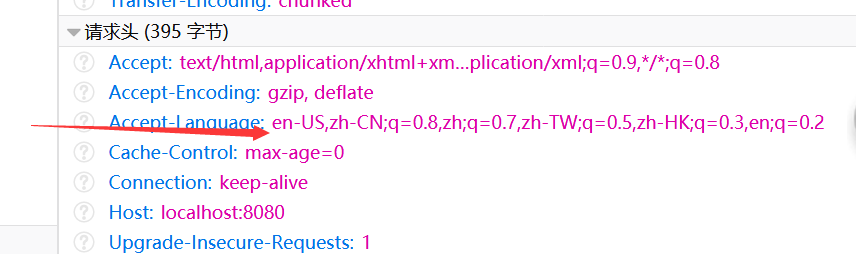
显示为
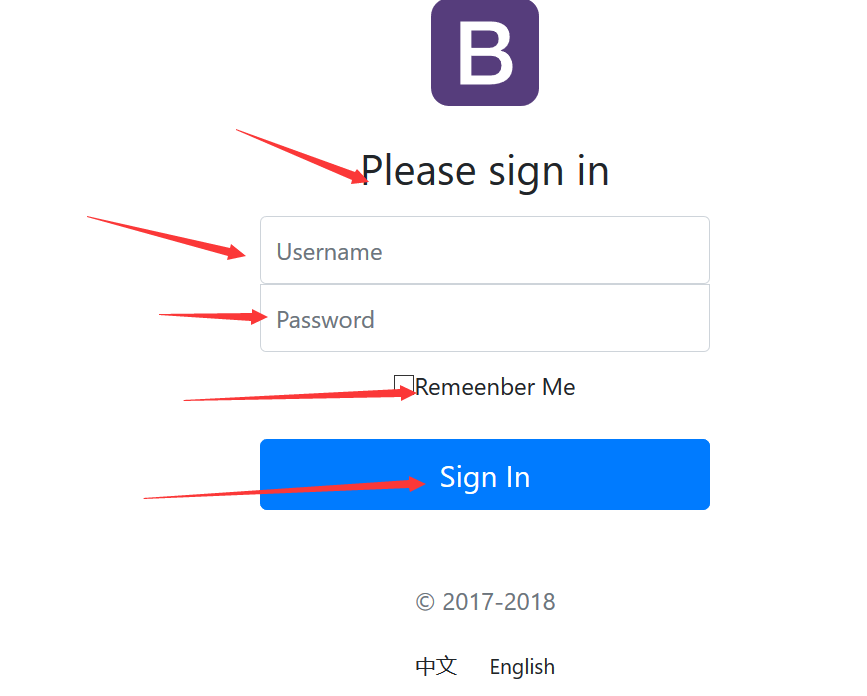
当请求头为中文时，即浏览器语言为中文时，就会zh_CN开头
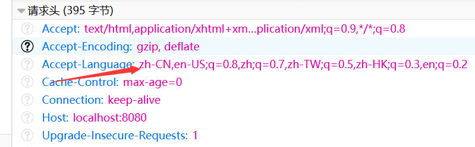
显示为
原理：
国际化Locale（区域信息对象）；LocaleResolver（获取区域信息对象）；
在WebMvcAutoConfiguration中有localeResolver（）
@Bean
@ConditionalOnMissingBean
@ConditionalOnProperty(prefix = "spring.mvc", name = "locale")
public LocaleResolver localeResolver() {
if (this.mvcProperties
.getLocaleResolver() == WebMvcProperties.LocaleResolver.FIXED) {
// 默认的就是根据请求头带来的区域信息获取Locale进行国际化
return new FixedLocaleResolver(this.mvcProperties.getLocale());
}
// 如果说是固定的LocaleResolver就用固定的，不然就在AcceptHeaderLocaleResolver去解析
AcceptHeaderLocaleResolver localeResolver = new AcceptHeaderLocaleResolver();
localeResolver.setDefaultLocale(this.mvcProperties.getLocale());
return localeResolver;
}
在AcceptHeaderLocaleResolver这个类中的resolveLocale方法就是在拿到request去解析请求头的语言信息
@Override
public Locale resolveLocale(HttpServletRequest request) {
Locale defaultLocale = getDefaultLocale();
if (defaultLocale != null && request.getHeader("Accept-Language") == null) {
return defaultLocale;
}
Locale requestLocale = request.getLocale();
List<Locale> supportedLocales = getSupportedLocales();
if (supportedLocales.isEmpty() || supportedLocales.contains(requestLocale)) {
return requestLocale;
}
Locale supportedLocale = findSupportedLocale(request, supportedLocales);
if (supportedLocale != null) {
return supportedLocale;
}
return (defaultLocale != null ? defaultLocale : requestLocale);
}
设置点击链接切换国际化，我们就可以不用spingboot默认的区域解析器，不让使用上面的该方法
@Bean
@ConditionalOnMissingBean
@ConditionalOnProperty(prefix = "spring.mvc", name = "locale")
public LocaleResolver localeResolver() {
...
}
可以在链接上携带区域信息。
<p class="mt-5 mb-3 text-muted">© 2017-2018</p>
<a class="btn btn-sm" th:href="@{/login.html(l='zh_CN')}">中文</a>
<a class="btn btn-sm" th:href="@{/login.html(l='en_US')}">English</a>
再实现我们自己的LocalResolver
/**
* 可以在链接上携带区域信息，实现resolveLocal方法
*/
public class MyLocaleResolver implements LocaleResolver{
@Override
public Locale resolveLocale(HttpServletRequest request) {
String l = request.getParameter("l");
Locale locale = Locale.getDefault();
if (!StringUtils.isEmpty(l)) {
String[] split = l.split("_");
locale = new Locale(split[0], split[1]);
}
return locale;
}
@Override
public void setLocale(HttpServletRequest request, HttpServletResponse response, Locale locale) {
// TODO Auto-generated method stub
}
}
同时将我们自己的LocaleResolver注入在容器中
@Configuration
public class MyConfig implements WebMvcConfigurer{
public void addViewControllers(ViewControllerRegistry registry) {
// 去设置在一个路径为/test controller中的返回的视图名为index的页面
// setViewName("index")也是根据对Thymeleaf的具体的配置类的路径在classpath:templates下
registry.addViewController("/test").setViewName("index");
}
// 自动会加载去访问根路径的时候加载登录页面
@Bean
public WebMvcConfigurer getWebMvcConfigurerAdapter() {
WebMvcConfigurer webMvcConfigurerAdapter = new WebMvcConfigurer() {
@Override
public void addViewControllers(ViewControllerRegistry registry) {
registry.addViewController("/").setViewName("login");
registry.addViewController("/login.html").setViewName("login");
}
};
return webMvcConfigurerAdapter;
}
// 同时注入在容器中方法名 只能为localeResolver 不能为getLocaleResolver及其他方法
@Bean
public LocaleResolver localeResolver() {
return new MyLocaleResolver();
}
}
3、登陆
开发期间模板引擎页面修改以后，要实时生效
1）禁用模板引擎的缓存
# 禁用缓存
spring.thymeleaf.cache=false
2）页面修改完成以后ctrl+f9：重新编译；
登陆错误消息的显示
<p style="color: red" th:text="${msg}" th:if="${not #strings.isEmpty(msg)}"></p>
4、热部署
<dependency>
<groupId>org.springframework.boot</groupId>
<artifactId>spring-boot-devtools</artifactId>
<!-- optional=true, 依赖不会传递, 该项目依赖devtools; 之后依赖boot项目的项目如果想要使用devtools, 需要重新引入 -->
<optional>true</optional>
</dependency>
## 在application.properties中
spring.thymeleaf.cache=false
spring.devtools.restart.enabled=true
spring.devtools.restart.additional-paths=src/main/java
5、拦截器进行登陆检查
拦截器
import javax.servlet.http.HttpServletRequest;
import javax.servlet.http.HttpServletResponse;
import org.springframework.web.servlet.HandlerInterceptor;
import com.test.staticResrouce.po.User;
public class LoginHandlerInterceptor implements HandlerInterceptor{
public boolean preHandle(HttpServletRequest request, HttpServletResponse response, Object handler) throws Exception {
User user = (User) request.getSession().getAttribute("user");
if (user == null) {
request.setAttribute("msg", "请先登录");
request.getRequestDispatcher("/login.html").forward(request, response);
return false;
} else {
return true;
}
}
注册拦截器
package com.test.staticResrouce.config;
import org.springframework.context.annotation.Bean;
import org.springframework.context.annotation.Configuration;
import org.springframework.web.servlet.LocaleResolver;
import org.springframework.web.servlet.config.annotation.InterceptorRegistry;
import org.springframework.web.servlet.config.annotation.ViewControllerRegistry;
import org.springframework.web.servlet.config.annotation.WebMvcConfigurer;
import com.test.staticResrouce.component.MyLocaleResolver;
import com.test.staticResrouce.interceptor.LoginHandlerInterceptor;
@Configuration
public class MyConfig implements WebMvcConfigurer{
public void addViewControllers(ViewControllerRegistry registry) {
// 去设置在一个路径为/test controller中的返回的视图名为index的页面
// setViewName("index")也是根据对Thymeleaf的具体的配置类的路径在classpath:templates下
registry.addViewController("/test").setViewName("index");
}
// 自动会加载去访问根路径的时候加载登录页面
@Bean
public WebMvcConfigurer getWebMvcConfigurerAdapter() {
WebMvcConfigurer webMvcConfigurerAdapter = new WebMvcConfigurer() {
@Override
public void addViewControllers(ViewControllerRegistry registry) {
registry.addViewController("/").setViewName("login");
registry.addViewController("/login.html").setViewName("login");
registry.addViewController("/main.html").setViewName("dashboard");
}
@Override
public void addInterceptors(InterceptorRegistry registry) {
//SpringBoot已经做好了静态资源映射
registry.addInterceptor(new LoginHandlerInterceptor()).addPathPatterns("/**")
.excludePathPatterns("/login.html","/","/user/login");
}
};
return webMvcConfigurerAdapter;
}
// 注入在容器中
@Bean
public LocaleResolver localeResolver() {
return new MyLocaleResolver();
}
}
6、thymeleaf公共页面元素抽取
1、抽取公共片段
<div th:fragment="copy">
© 2011 The Good Thymes Virtual Grocery
</div>
2、引入公共片段
<div th:insert="~{footer :: copy}"></div>
~{templatename::selector}：模板名::选择器
~{templatename::fragmentname}:模板名::片段名
3、默认效果：
insert的公共片段在div标签中
如果使用th:insert等属性进行引入，可以不用写~{}：
行内写法可以加上：[[~{}]];[(~{})]；
三种引入公共片段的th属性：
th:insert：将公共片段整个插入到声明引入的元素中
th:replace：将声明引入的元素替换为公共片段
th:include：将被引入的片段的内容包含进这个标签中
<footer th:fragment="copy">
© 2011 The Good Thymes Virtual Grocery
</footer>
引入方式
<div th:insert="footer :: copy"></div>
<div th:replace="footer :: copy"></div>
<div th:include="footer :: copy"></div>
效果
<div>
<footer>
© 2011 The Good Thymes Virtual Grocery
</footer>
</div>
<footer>
© 2011 The Good Thymes Virtual Grocery
</footer>
<div>
© 2011 The Good Thymes Virtual Grocery
</div>
引入片段的时候传入参数：
<nav class="col-md-2 d-none d-md-block bg-light sidebar" id="sidebar">
<div class="sidebar-sticky">
<ul class="nav flex-column">
<li class="nav-item">
<a class="nav-link active"
th:class="${activeUri=='main.html'?'nav-link active':'nav-link'}"
href="#" th:href="@{/main.html}">
<svg xmlns="http://www.w3.org/2000/svg" width="24" height="24" viewBox="0 0 24 24" fill="none" stroke="currentColor" stroke-width="2" stroke-linecap="round" stroke-linejoin="round" class="feather feather-home">
<path d="M3 9l9-7 9 7v11a2 2 0 0 1-2 2H5a2 2 0 0 1-2-2z"></path>
<polyline points="9 22 9 12 15 12 15 22"></polyline>
</svg>
Dashboard <span class="sr-only">(current)</span>
</a>
</li>
<!--引入侧边栏;传入参数-->
<div th:replace="commons/bar::#sidebar(activeUri='emps')"></div>
7、SpringBoot默认的错误处理机制
springboot在错误的处理上设置了一个默认的页面：
1）、浏览器，返回一个默认的错误页面
 当浏览器发送请求时，会是text/html的，浏览器发送请求的请求头：
当浏览器发送请求时，会是text/html的，浏览器发送请求的请求头：
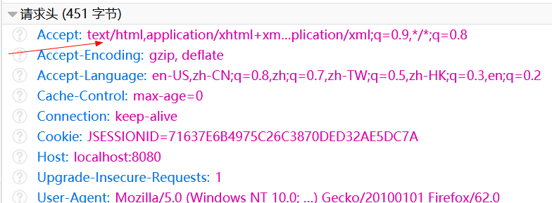
2）、如果是其他客户端，比如安卓手机的请求等，默认响应一个json数据
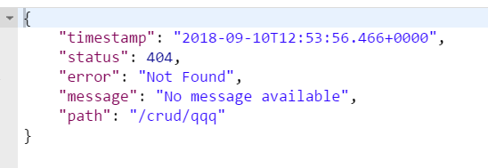
原理：
可以参照springboot的ErrorMvcAutoConfiguration；错误处理的自动配置；
给容器中添加了以下组件
1、ErrorPageCustomizer：
在ErrorMvcAutoConfiguration中有一个ErrorPageCustomizer的静态内部类，他的作用就是在发生4xx或5xx错误时来进行处理，他的方法registerErrorPages就会注册一个error的请求，相当于在web.xml中写一个错误请求一样。
@Configuration
@ConditionalOnWebApplication
@ConditionalOnClass({ Servlet.class, DispatcherServlet.class })
// Load before the main WebMvcAutoConfiguration so that the error View is available
@AutoConfigureBefore(WebMvcAutoConfiguration.class)
@EnableConfigurationProperties(ResourceProperties.class)
public class ErrorMvcAutoConfiguration {
private final ServerProperties serverProperties;
private final List<ErrorViewResolver> errorViewResolvers;
/**
* {@link EmbeddedServletContainerCustomizer} that configures the container's error
* pages.
*/
private static class ErrorPageCustomizer implements ErrorPageRegistrar, Ordered {
private final ServerProperties properties;
protected ErrorPageCustomizer(ServerProperties properties) {
this.properties = properties;
}
@Override
public void registerErrorPages(ErrorPageRegistry errorPageRegistry) {
ErrorPage errorPage = new ErrorPage(this.properties.getServletPrefix()
+ this.properties.getError().getPath());
errorPageRegistry.addErrorPages(errorPage);
}
@Override
public int getOrder() {
return 0;
}
}
}
在上面的registerErrorPages方法中会得到一个ErrorProperties中的path在没有时默认为/error路径的请求，也可以自己在 properties中定义path，就回去请求该路径的controller的请求
public class ErrorProperties {
/**
* Path of the error controller.
*/
@Value("${error.path:/error}")
private String path = "/error";
2、BasicErrorController：处理默认/error请求，默认路径为/error,就会来到BasicErrorController中去处理请求.
BasicErrorController如下，其实他就是一个controller，他的requestMapping就是默认为/error的。我们也可以配置路径在properties中。其中就有两种方式的处理，一种是对浏览器的访问的处理，一种是对客户端的访问处理。
@Controller
@RequestMapping("${server.error.path:${error.path:/error}}")
public class BasicErrorController extends AbstractErrorController {
@RequestMapping(produces = "text/html")//产生html类型的数据；浏览器发送的请求来到这个方法处理
public ModelAndView errorHtml(HttpServletRequest request,
HttpServletResponse response) {
HttpStatus status = getStatus(request);
Map<String, Object> model = Collections.unmodifiableMap(getErrorAttributes(
request, isIncludeStackTrace(request, MediaType.TEXT_HTML)));
response.setStatus(status.value());
//去哪个页面作为错误页面；包含页面地址和页面内容
ModelAndView modelAndView = resolveErrorView(request, response, status, model);
return (modelAndView == null ? new ModelAndView("error", model) : modelAndView);
}
@RequestMapping
@ResponseBody //产生json数据，其他客户端来到这个方法处理；
public ResponseEntity<Map<String, Object>> error(HttpServletRequest request) {
Map<String, Object> body = getErrorAttributes(request,
isIncludeStackTrace(request, MediaType.ALL));
HttpStatus status = getStatus(request);
return new ResponseEntity<Map<String, Object>>(body, status);
}
}
3、DefaultErrorViewResolver：去哪个页面是由DefaultErrorViewResolver解析得到的
@Configuration
static class DefaultErrorViewResolverConfiguration {
private final ApplicationContext applicationContext;
private final ResourceProperties resourceProperties;
DefaultErrorViewResolverConfiguration(ApplicationContext applicationContext,
ResourceProperties resourceProperties) {
this.applicationContext = applicationContext;
this.resourceProperties = resourceProperties;
@Bean
@ConditionalOnBean(DispatcherServlet.class)
@ConditionalOnMissingBean
public DefaultErrorViewResolver conventionErrorViewResolver() {
return new DefaultErrorViewResolver(this.applicationContext,
this.resourceProperties);
}
}
在这个方法中有对4xx、5xx的处理，当发生什么错误的时候，就会传入一个状态码，如果在我们的页面中有对应的状态码的页面html就回去访问该页面，比如404的错误如果有404.html的页面的话，就会去访问该页面
public class DefaultErrorViewResolver implements ErrorViewResolver, Ordered {
private static final Map<Series, String> SERIES_VIEWS;
static {
Map<Series, String> views = new HashMap<Series, String>();
views.put(Series.CLIENT_ERROR, "4xx");
views.put(Series.SERVER_ERROR, "5xx");
SERIES_VIEWS = Collections.unmodifiableMap(views);
}
@Override
public ModelAndView resolveErrorView(HttpServletRequest request, HttpStatus status,
Map<String, Object> model) {
ModelAndView modelAndView = resolve(String.valueOf(status), model);
if (modelAndView == null && SERIES_VIEWS.containsKey(status.series())) {
modelAndView = resolve(SERIES_VIEWS.get(status.series()), model);
}
return modelAndView;
}
private ModelAndView resolve(String viewName, Map<String, Object> model) {
String errorViewName = "error/" + viewName;
TemplateAvailabilityProvider provider = this.templateAvailabilityProviders
.getProvider(errorViewName, this.applicationContext);
if (provider != null) {
return new ModelAndView(errorViewName, model);
}
return resolveResource(errorViewName, model);
}
private ModelAndView resolveResource(String viewName, Map<String, Object> model) {
for (String location : this.resourceProperties.getStaticLocations()) {
try {
Resource resource = this.applicationContext.getResource(location);
resource = resource.createRelative(viewName + ".html");
if (resource.exists()) {
return new ModelAndView(new HtmlResourceView(resource), model);
}
}
catch (Exception ex) {
}
}
return null;
}
}
4、DefaultErrorAttributes：帮我们定制错误页面的信息
@Order(Ordered.HIGHEST_PRECEDENCE)
public class DefaultErrorAttributes
implements ErrorAttributes, HandlerExceptionResolver, Ordered {
// 实现了ErrorAttributes的接口
@Override
public Map<String, Object> getErrorAttributes(RequestAttributes requestAttributes,
boolean includeStackTrace) {
Map<String, Object> errorAttributes = new LinkedHashMap<String, Object>();
errorAttributes.put("timestamp", new Date()); //返回时间戳
addStatus(errorAttributes, requestAttributes);// 返回错误的状态码
addErrorDetails(errorAttributes, requestAttributes, includeStackTrace); // 返回错误请求详情，报错了对异常的捕获，返回异常信息。
addPath(errorAttributes, requestAttributes); // 返回错误的访问路径
return errorAttributes;
}
}
1、如何定制错误响应
1、如何定制错误的页面
1）、有模板引擎的情况下；error/状态码;【将错误页面命名为 错误状态码.html 放在模板引擎文件夹里面的 error文件夹下】，发生此状态码的错误就会来到 对应的页面；
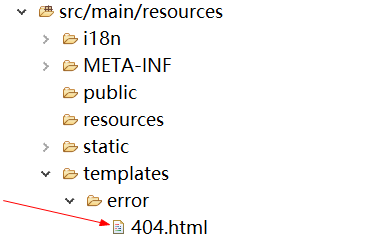
2、 我们可以使用4xx和5xx作为错误页面的文件名来匹配这种类型的所有错误，精确优先（优先寻找精确的状态码.html）；
DefaultErrorAttributes：帮我们定制错误页面的信息，在其中都有对信息的处理比如：
timestamp：时间戳
status：状态码
error：错误提示
exception：异常对象
message：异常消息
errors：JSR303数据校验的错误都在这里
我们定义一个4xx.html页面
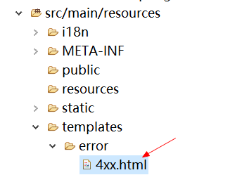
页面中写上自己有的几个属性
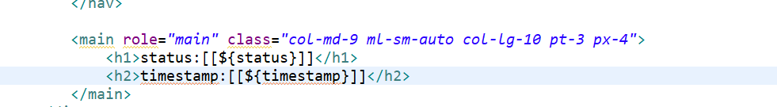
就会有定制的属性的信息了
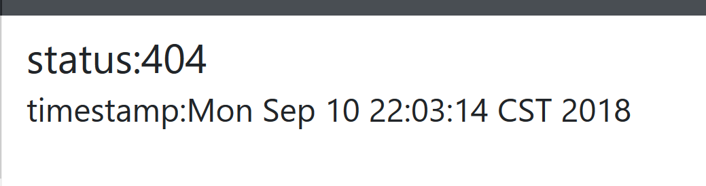
2）、没有模板引擎（模板引擎找不到这个错误页面），静态资源文件夹下找；
3）、以上都没有错误页面，就是默认来到SpringBoot默认的错误提示页面；
在ErrorMvcAutoConfiguation中,就有一个默认拼接的html页面，就是我们之前看到的错误页面
@Configuration
@ConditionalOnProperty(prefix = "server.error.whitelabel", name = "enabled", matchIfMissing = true)
@Conditional(ErrorTemplateMissingCondition.class)
protected static class WhitelabelErrorViewConfiguration {
private final SpelView defaultErrorView = new SpelView(
"<html><body><h1>Whitelabel Error Page</h1>"
+ "<p>This application has no explicit mapping for /error, so you are seeing this as a fallback.</p>"
+ "<div id='created'>${timestamp}</div>"
+ "<div>There was an unexpected error (type=${error}, status=${status}).</div>"
+ "<div>${message}</div></body></html>");
@Bean(name = "error") // 来到error的bean
@ConditionalOnMissingBean(name = "error")
public View defaultErrorView() {
return this.defaultErrorView;
}
// If the user adds @EnableWebMvc then the bean name view resolver from
// WebMvcAutoConfiguration disappears, so add it back in to avoid disappointment.
@Bean
@ConditionalOnMissingBean(BeanNameViewResolver.class)
public BeanNameViewResolver beanNameViewResolver() {
BeanNameViewResolver resolver = new BeanNameViewResolver();
resolver.setOrder(Ordered.LOWEST_PRECEDENCE - 10);
return resolver;
}
}
2、如何定制错误的json数据；
1、我们可以自定义异常
public class MyException extends RuntimeException{
private static final long serialVersionUID = 1L;
public MyException() {
super("测试异常");
}
}
2、当springmvc捕获异常的时候就可以去得到massage和exception的信息
@Controller
public class HelloController {
@RequestMapping("/hello")
public String hello(String id) {
if(id.equals("1")) {
// 访问时抛出异常，在5xx.html中就能返回异常信息
throw new MyException();
}
return "hello";
}
}
<main role="main" class="col-md-9 ml-sm-auto col-lg-10 pt-3 px-4">
<h1>status:[[${status}]]</h1>
<h2>timestamp:[[${timestamp}]]</h2>
<h2>message:[[${message}]]</h2>
<h2>exception:[[${exception}]]</h2>
</main>
访问时显示的样式：
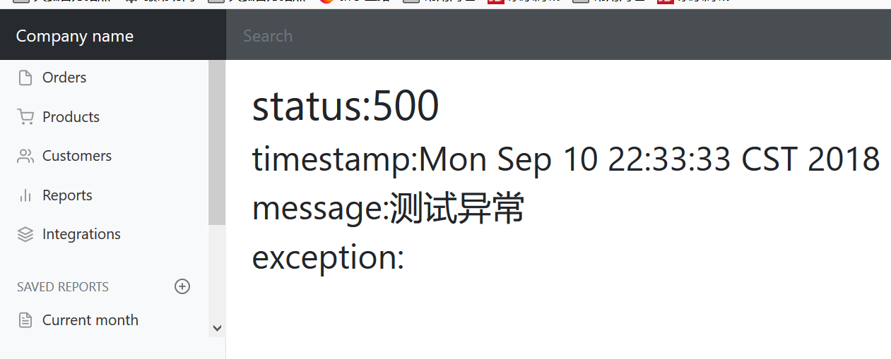
客户端访问返回的是:就没有我们自己定义的效果了
{
"timestamp": "2018-09-10T14:40:51.329+0000",
"status": 500,
"error": "Internal Server Error",
"message": "测试异常",
"path": "/crud/hello"
}
我们可以定制一个异常处理器：
@ControllerAdvice // 表示为spingmvc的异常处理器
public class MyExceptionHandle {
@ResponseBody // 这种方式都是返回的json数据，就没有返回页面了，
@ExceptionHandler(MyException.class)
public Map<String,Object> handleException(Exception e){
Map<String,Object> map = new HashMap<>();
map.put("code","测试500");
map.put("message",e.getMessage());
return map;
}
}
当返回时就可以是自己定制的样式了。 但是这种方式都是返回的json数据，就没有返回页面了，
{
"code": "测试500",
"message": "测试异常"
}
我们可以转发到/error路径，在BasicErrorController中有对html和json的区分
@ControllerAdvice // 表示为spingmvc的异常处理器
public class MyExceptionHandle {
/* @ResponseBody
@ExceptionHandler(MyException.class)
public Map<String,Object> handleException(Exception e){
Map<String,Object> map = new HashMap<>();
map.put("code","测试500");
map.put("message",e.getMessage());
return map;
}*/
@ExceptionHandler(MyException.class)
public String handleException(Exception e){
Map<String,Object> map = new HashMap<>();
map.put("code","测试500");
map.put("message",e.getMessage());
return "forward:/error";
}
}
返回的页面和json为：
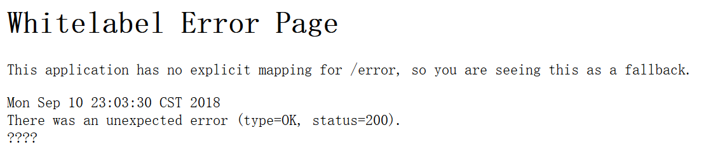
{
"timestamp": "2018-09-10T15:04:17.121+0000",
"status": 200,
"error": "OK",
"message": "测试异常",
"path": "/crud/hello"
}
这样的时候是不能得到正常的错误信息的，而且没有到我们的错误页面里面，status还是200成功对的状态。在BasicErrorController的解析的时候，会去得到状态码。
protected HttpStatus getStatus(HttpServletRequest request) {
// 获得状态码
Integer statusCode = (Integer) request
.getAttribute("javax.servlet.error.status_code");
if (statusCode == null) {
return HttpStatus.INTERNAL_SERVER_ERROR;
}
try {
return HttpStatus.valueOf(statusCode);
}
catch (Exception ex) {
return HttpStatus.INTERNAL_SERVER_ERROR;
}
}
所以我们需要自己去定义状态码
@ControllerAdvice // 表示为spingmvc的异常处理器
public class MyExceptionHandle {
/* @ResponseBody
@ExceptionHandler(MyException.class)
public Map<String,Object> handleException(Exception e){
Map<String,Object> map = new HashMap<>();
map.put("code","测试500");
map.put("message",e.getMessage());
return map;
}*/
@ExceptionHandler(MyException.class)
public String handleException(Exception e, HttpServletRequest request){
Map<String,Object> map = new HashMap<>();
map.put("code","测试500");
map.put("message",e.getMessage());
request.setAttribute("javax.servlet.error.status_code", 500);
return "forward:/error";
}
}
这样就能到我们的页面，显示我们自己输入的状态码
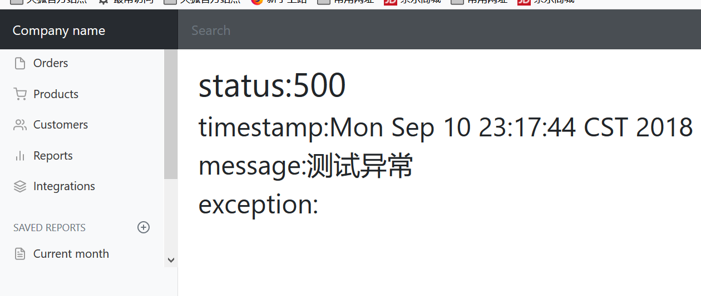
{
"timestamp": "2018-09-10T15:17:49.682+0000",
"status": 500,
"error": "Internal Server Error",
"message": "测试异常",
"path": "/crud/hello"
}
不过这样还是没有带上我们自己定义的信息数据。
3、将我们的定制数据携带出去；
出现错误以后，会来到/error请求，会被BasicErrorController处理，响应出去可以获取的数据是由getErrorAttributes得到的（是AbstractErrorController（ErrorController）规定的方法）；
1、完全来编写一个ErrorController的实现类【或者是编写AbstractErrorController的子类】，放在容器中；
2、页面上能用的数据，或者是json返回能用的数据都是通过errorAttributes.getErrorAttributes得到；
容器中DefaultErrorAttributes.getErrorAttributes()；默认进行数据处理的；
自定义ErrorAttributes
package com.test.staticResrouce.component;
import java.util.Map;
import org.springframework.boot.web.servlet.error.DefaultErrorAttributes;
import org.springframework.stereotype.Component;
import org.springframework.web.context.request.WebRequest;
//给容器中加入我们自己定义的ErrorAttributes
@Component
public class MyErrorAttributes extends DefaultErrorAttributes {
@Override
public Map<String, Object> getErrorAttributes(WebRequest webRequest, boolean includeStackTrace) {
Map<String, Object> map = super.getErrorAttributes(webRequest, includeStackTrace);
map.put("test", webRequest.getAttribute("test", 0));
// 0代表request作用域取值，1代表从session中取值
return map;
}
}
// 在myExceptionHandle中
@ExceptionHandler(MyException.class)
public String handleException(Exception e, HttpServletRequest request){
Map<String,Object> map = new HashMap<>();
map.put("code","测试500");
map.put("message",e.getMessage());
request.setAttribute("javax.servlet.error.status_code", 500);
request.setAttribute("test", map); //放在作用域中
return "forward:/error";
}
最终的效果：响应是自适应的，可以通过定制ErrorAttributes改变需要返回的内容，
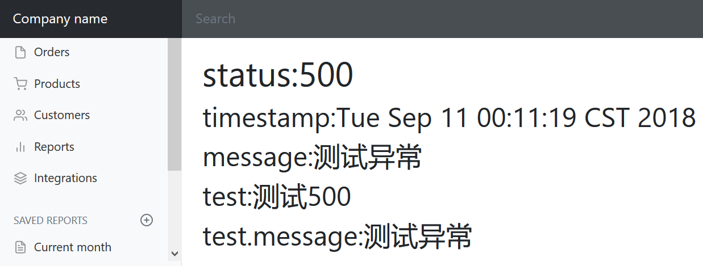
{
"timestamp": "2018-09-10T16:13:53.264+0000",
"status": 500,
"error": "Internal Server Error",
"message": "测试异常",
"path": "/crud/hello",
"test": {
"code": "测试500",
"message": "测试异常"
}
}
8、配置嵌入式Servlet容器
SpringBoot默认是使用Tomcat作为嵌入式的Servlet容器。在spring-boot-starter-web中有一个spring-boot-starter-tomcat.
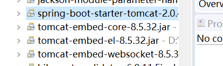
1、如何定制和修改Servlet容器的相关配置
在ServerProperties中就有对server的配置,其中有一个tomcat的属性。
@ConfigurationProperties(prefix = "server", ignoreUnknownFields = true)
public class ServerProperties {
/**
* Server HTTP port.
*/
private Integer port;
/**
* Network address to which the server should bind.
*/
private InetAddress address;
@NestedConfigurationProperty
private final ErrorProperties error = new ErrorProperties();
private final Tomcat tomcat = new Tomcat();
在其中就有tomcat的一些配置
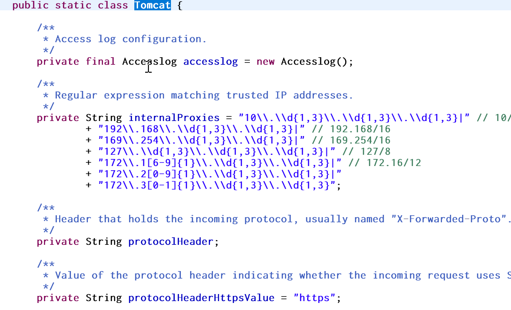
1、修改和server有关的配置（ServerProperties【也是EmbeddedServletContainerCustomizer】）
server.port=8081
server.context-path=/crud
server.tomcat.uri-encoding=UTF-8
//通用的Servlet容器设置
server.xxx
//Tomcat的设置
server.tomcat.xxx
2、编写一个EmbeddedServletContainerCustomizer：嵌入式的Servlet容器的定制器；来修改Servlet容器的配置(springboot1.xx的方法，在2.xx已经不再使用)
@Bean //一定要将这个定制器加入到容器中
public EmbeddedServletContainerCustomizer embeddedServletContainerCustomizer(){
return new EmbeddedServletContainerCustomizer() {
//定制嵌入式的Servlet容器相关的规则
@Override
public void customize(ConfigurableEmbeddedServletContainer container) {
container.setPort(8083);
}
};
}
在TomcatServletWebServerFactoryCustomizer中的customize方法就会得到所有的配置。所以我们通过编程的方式去是设置servlet容器就可以去实现WebServerFactoryCustomizer，重写他的 customize方法。WebServerFactoryCustomizer就是TomcatServletWebServerFactoryCustomizer父类
public class TomcatServletWebServerFactoryCustomizer
implements WebServerFactoryCustomizer<TomcatServletWebServerFactory>, Ordered {
private final ServerProperties serverProperties;
public TomcatServletWebServerFactoryCustomizer(ServerProperties serverProperties) {
this.serverProperties = serverProperties;
}
@Override
public int getOrder() {
return 0;
}
@Override
public void customize(TomcatServletWebServerFactory factory) {
// 得到tomcat的配置信息
ServerProperties.Tomcat tomcatProperties = this.serverProperties.getTomcat();
if (!ObjectUtils.isEmpty(tomcatProperties.getAdditionalTldSkipPatterns())) {
factory.getTldSkipPatterns()
.addAll(tomcatProperties.getAdditionalTldSkipPatterns());
}
if (tomcatProperties.getRedirectContextRoot() != null) {
customizeRedirectContextRoot(factory,
tomcatProperties.getRedirectContextRoot());
}
if (tomcatProperties.getUseRelativeRedirects() != null) {
customizeUseRelativeRedirects(factory,
tomcatProperties.getUseRelativeRedirects());
}
}
如果需要以编程方式配置嵌入式servlet容器，可以注册实现该WebServerFactoryCustomizer接口的Spring bean 。 WebServerFactoryCustomizer提供对其的访问ConfigurableServletWebServerFactory，其中包括许多自定义setter方法。以下示例以编程方式设置端口：同样和使用配置文件一样的效果。
@Component
public class CustomizationBean implements WebServerFactoryCustomizer<ConfigurableServletWebServerFactory> {
@Override
public void customize(ConfigurableServletWebServerFactory factory) {
factory.setPort(8082);
}
}
也可以在配置类里面去编写代码
@Bean
public WebServerFactoryCustomizer<ConfigurableWebServerFactory> webServerFactoryCustomizer(){
return new WebServerFactoryCustomizer<ConfigurableWebServerFactory>() {
@Override
public void customize(ConfigurableWebServerFactory factory) {
factory.setPort(9000);
}
};
}
ps：如果bean有一个构造函数，则可以省略@Autowired，默认去容器中取。如下例所示：
@Service
public class DatabaseAccountService implements AccountService {
//默认去容器中取riskAssessor
private final RiskAssessor riskAssessor;
public DatabaseAccountService(RiskAssessor riskAssessor) {
this.riskAssessor = riskAssessor;
}
}
2、注册Servlet三大组件【Servlet、Filter、Listener】
我们注册Servlet、Filter、Listener一般是在是在web.xml中。因为springboot默认是以jar包的方式启动嵌入式servlet容器来启动web应用。是没有web.xml的。所以springboot是通过:
1、ServletRegistrationBean
2、FilterRegistrationBean
3、ListenerRegistrationBean
来分别完成对三大组件的注册。
ServletRegistrationBean
// 定义一个servlet
public class MyServlet extends HttpServlet {
@Override
protected void doGet(HttpServletRequest req, HttpServletResponse resp) throws ServletException, IOException {
this.doPost(req, resp);
}
@Override
protected void doPost(HttpServletRequest req, HttpServletResponse resp) throws ServletException, IOException {
resp.getWriter().write("hello world");
}
}
@Configuration
public class MyServletConfig {
// 注册servlet
@Bean
public ServletRegistrationBean<MyServlet> myServlet() {
// 注册自己的sevlet的访问路径
ServletRegistrationBean<MyServlet> myServlet = new ServletRegistrationBean<MyServlet>(new MyServlet(), "/servlet");
myServlet.setLoadOnStartup(1)
return myServlet;
}
}
FilterRegistrationBean
// 定义一个自己的过滤器
public class MyFilter implements Filter {
@Override
public void init(FilterConfig filterConfig) throws ServletException {
// TODO Auto-generated method stub
}
@Override
public void doFilter(ServletRequest request, ServletResponse response, FilterChain chain)
throws IOException, ServletException {
System.out.println("filter proess...");
//放开过滤
chain.doFilter(request, response);
}
@Override
public void destroy() {
// TODO Auto-generated method stub
}
}
@Configuration
public class MyServletConfig {
@Bean
public FilterRegistrationBean<MyFilter> myFilter() {
// 注册自己的filter
FilterRegistrationBean<MyFilter> myFilterBean = new FilterRegistrationBean<MyFilter>();
myFilterBean.setFilter(new MyFilter());
myFilterBean.setUrlPatterns(Arrays.asList("/servlet", "/hello"));
return myFilterBean;
}
ListenerRegistrationBean
// 定义自己的listener
public class MyServletListener implements ServletContextListener {
@Override
public void contextInitialized(ServletContextEvent sce) {
System.out.println("启动时...");
}
@Override
public void contextDestroyed(ServletContextEvent sce) {
System.out.println("销毁时...");
}
}
@Configuration
public class MyServletConfig {
// 注册ServletListenerRegistrationBean
@Bean
public ServletListenerRegistrationBean<MyServletListener> myListener() {
return new ServletListenerRegistrationBean<MyServletListener>(new MyServletListener());
}
}
SpringBoot帮我们自动SpringMVC的时候，自动的注册SpringMVC的前端控制器:DIspatcherServlet
在DispatcherServletAutoConfiguration中：
@Bean(name = DEFAULT_DISPATCHER_SERVLET_REGISTRATION_BEAN_NAME)
@ConditionalOnBean(value = DispatcherServlet.class, name = DEFAULT_DISPATCHER_SERVLET_BEAN_NAME)
public DispatcherServletRegistrationBean dispatcherServletRegistration(
DispatcherServlet dispatcherServlet) {
DispatcherServletRegistrationBean registration = new DispatcherServletRegistrationBean(
dispatcherServlet, this.serverProperties.getServlet().getPath());
//默认拦截： / 所有请求；包静态资源，但是不拦截jsp请求； /*会拦截jsp
//可以通过server.path来修改SpringMVC前端控制器默认拦截的请求路径
registration.setName(DEFAULT_DISPATCHER_SERVLET_BEAN_NAME);
registration.setLoadOnStartup(
this.webMvcProperties.getServlet().getLoadOnStartup());
if (this.multipartConfig != null) {
registration.setMultipartConfig(this.multipartConfig);
}
return registration;
}
3、替换为其他嵌入式Servlet容器
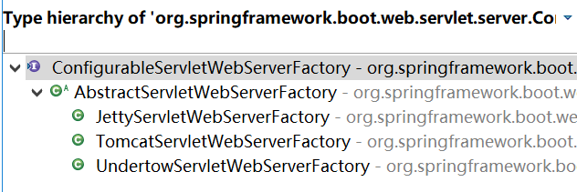
默认支持：
Tomcat（默认使用）
<dependency>
<groupId>org.springframework.boot</groupId>
<artifactId>spring-boot-starter-web</artifactId>
<!--引入web模块默认就是使用嵌入式的Tomcat作为Servlet容器；-->
</dependency>
Jetty
<!-- 引入web模块 -->
<dependency>
<groupId>org.springframework.boot</groupId>
<artifactId>spring-boot-starter-web</artifactId>
<exclusions>
<!--排除默认的tomcat容器-->
<exclusion>
<artifactId>spring-boot-starter-tomcat</artifactId>
<groupId>org.springframework.boot</groupId>
</exclusion>
</exclusions>
</dependency>
<!--引入其他的Servlet容器-->
<dependency>
<artifactId>spring-boot-starter-jetty</artifactId>
<groupId>org.springframework.boot</groupId>
</dependency>
效果：以jetty启动
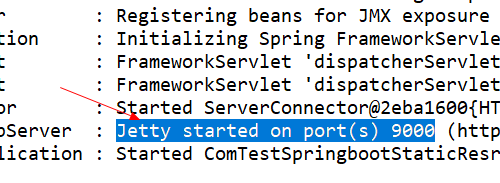
Undertow
<!-- 引入web模块 -->
<dependency>
<groupId>org.springframework.boot</groupId>
<artifactId>spring-boot-starter-web</artifactId>
<exclusions>
<exclusion>
<!--排除默认的tomcat容器-->
<artifactId>spring-boot-starter-tomcat</artifactId>
<groupId>org.springframework.boot</groupId>
</exclusion>
</exclusions>
</dependency>
<!--引入其他的Servlet容器-->
<dependency>
<artifactId>spring-boot-starter-undertow</artifactId>
<groupId>org.springframework.boot</groupId>
</dependency>
效果：以undertow启动
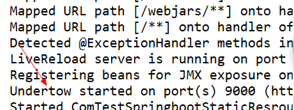
4、嵌入式Servlet容器自动配置原理
EmbeddedServletContainerAutoConfiguration
EmbeddedWebServerFactoryCustomizerAutoConfiguration：嵌入式的Servlet容器自动配置
@AutoConfigureOrder(Ordered.HIGHEST_PRECEDENCE)
@Configuration
@ConditionalOnWebApplication
@Import(BeanPostProcessorsRegistrar.class)
//导入BeanPostProcessorsRegistrar注册器：Spring注解版；给容器中导入一些组件
//导入了EmbeddedServletContainerCustomizerBeanPostProcessor：
//后置处理器：bean初始化前后（创建完对象，还没赋值赋值）执行初始化工作
public class EmbeddedServletContainerAutoConfiguration {
@Configuration
@ConditionalOnClass({ Servlet.class, Tomcat.class })//判断当前是否引入了Tomcat依赖；
@ConditionalOnMissingBean(value = EmbeddedServletContainerFactory.class, search = SearchStrategy.CURRENT)//判断当前容器没有用户自己定义EmbeddedServletContainerFactory：嵌入式的Servlet容器工厂；作用：创建嵌入式的Servlet容器
public static class EmbeddedTomcat {
// 默认为创建tomcat的容器工厂
@Bean
public TomcatEmbeddedServletContainerFactory tomcatEmbeddedServletContainerFactory() {
return new TomcatEmbeddedServletContainerFactory();
}
}
/**
* Nested configuration if Jetty is being used.
* 如果是 Server.class 等 就创建jetty的嵌入式容器工厂
*/
@Configuration
@ConditionalOnClass({ Servlet.class, Server.class, Loader.class,
WebAppContext.class })
@ConditionalOnMissingBean(value = EmbeddedServletContainerFactory.class, search = SearchStrategy.CURRENT)
public static class EmbeddedJetty {
@Bean
public JettyEmbeddedServletContainerFactory jettyEmbeddedServletContainerFactory() {
return new JettyEmbeddedServletContainerFactory();
}
}
/**
* Nested configuration if Undertow is being used.
* 如果是 Undertow.class 等 就创建Undertow的嵌入式容器工厂
*/
@Configuration
@ConditionalOnClass({ Servlet.class, Undertow.class, SslClientAuthMode.class })
@ConditionalOnMissingBean(value = EmbeddedServletContainerFactory.class, search = SearchStrategy.CURRENT)
public static class EmbeddedUndertow {
@Bean
public UndertowEmbeddedServletContainerFactory undertowEmbeddedServletContainerFactory() {
return new UndertowEmbeddedServletContainerFactory();
}
}
1、EmbeddedServletContainerFactory（嵌入式Servlet容器工厂）
public interface EmbeddedServletContainerFactory {
/**
* Gets a new fully configured but paused {@link EmbeddedServletContainer} instance.
* Clients should not be able to connect to the returned server until
* {@link EmbeddedServletContainer#start()} is called (which happens when the
* {@link ApplicationContext} has been fully refreshed).
* @param initializers {@link ServletContextInitializer}s that should be applied as
* the container starts
* @return a fully configured and started {@link EmbeddedServletContainer}
* @see EmbeddedServletContainer#stop()
*/
//getEmbeddedServletContainer 获取嵌入式的web容器
EmbeddedServletContainer getEmbeddedServletContainer(
ServletContextInitializer... initializers);
}
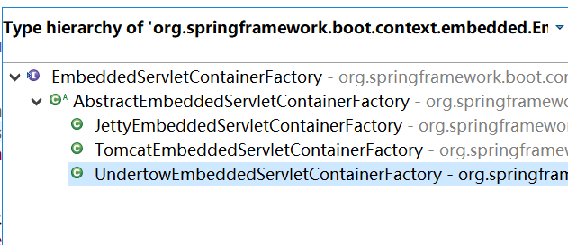
2、EmbeddedServletContainer：（嵌入式的Servlet容器）
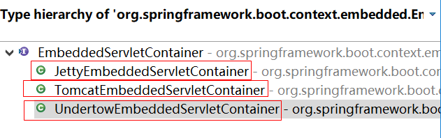
3、以TomcatEmbeddedServletContainerFactory为例，在TomcatEmbeddedServletContainerFactory中
@Override
public EmbeddedServletContainer getEmbeddedServletContainer(
ServletContextInitializer... initializers) {
//创建一个Tomcat
Tomcat tomcat = new Tomcat();
//配置Tomcat的基本环节
File baseDir = (this.baseDirectory != null ? this.baseDirectory
: createTempDir("tomcat"));
tomcat.setBaseDir(baseDir.getAbsolutePath());
Connector connector = new Connector(this.protocol);
tomcat.getService().addConnector(connector);
customizeConnector(connector);
tomcat.setConnector(connector);
tomcat.getHost().setAutoDeploy(false);
configureEngine(tomcat.getEngine());
for (Connector additionalConnector : this.additionalTomcatConnectors) {
tomcat.getService().addConnector(additionalConnector);
}
prepareContext(tomcat.getHost(), initializers);
//将配置好的Tomcat传入进去，返回一个EmbeddedServletContainer；并且启动Tomcat服务器
return getTomcatEmbeddedServletContainer(tomcat);
}
// 创建一个 TomcatEmbeddedServletContainer
protected TomcatEmbeddedServletContainer getTomcatEmbeddedServletContainer(
Tomcat tomcat) {
return new TomcatEmbeddedServletContainer(tomcat, getPort() >= 0);
}
4、我们对嵌入式容器的配置修改是怎么生效的呢
就是在容器中添加ServerProperties、EmbeddedServletContainerCustomizer。
EmbeddedServletContainerCustomizer：定制器帮我们修改了Servlet容器的配置
/**
* Create a new {@link TomcatEmbeddedServletContainer} instance.
* @param tomcat the underlying Tomcat server
* @param autoStart if the server should be started
*/
public TomcatEmbeddedServletContainer(Tomcat tomcat, boolean autoStart) {
Assert.notNull(tomcat, "Tomcat Server must not be null");
this.tomcat = tomcat;
this.autoStart = autoStart;
initialize();
}
private void initialize() throws EmbeddedServletContainerException {
TomcatEmbeddedServletContainer.logger
.info("Tomcat initialized with port(s): " + getPortsDescription(false));
synchronized (this.monitor) {
try {
addInstanceIdToEngineName();
try {
final Context context = findContext();
context.addLifecycleListener(new LifecycleListener() {
@Override
public void lifecycleEvent(LifecycleEvent event) {
if (context.equals(event.getSource())
&& Lifecycle.START_EVENT.equals(event.getType())) {
// Remove service connectors so that protocol
// binding doesn't happen when the service is
// started.
removeServiceConnectors();
}
}
});
// Start the server to trigger initialization listeners
this.tomcat.start();
// We can re-throw failure exception directly in the main thread
rethrowDeferredStartupExceptions();
try {
ContextBindings.bindClassLoader(context, getNamingToken(context),
getClass().getClassLoader());
}
catch (NamingException ex) {
// Naming is not enabled. Continue
}
// Unlike Jetty, all Tomcat threads are daemon threads. We create a
// blocking non-daemon to stop immediate shutdown
startDaemonAwaitThread();
}
catch (Exception ex) {
containerCounter.decrementAndGet();
throw ex;
}
}
catch (Exception ex) {
stopSilently();
throw new EmbeddedServletContainerException(
"Unable to start embedded Tomcat", ex);
}
}
}
怎么修改的原理？
5、容器中导入了EmbeddedServletContainerCustomizerBeanPostProcessor
在自动配置类中导入了BeanPostProcessorsRegistrar注册器
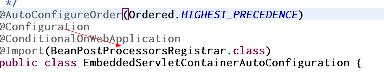
得到了BeanPostProcessor的子类EmbeddedServletContainerCustomizerBeanPostProcessor
public class EmbeddedServletContainerCustomizerBeanPostProcessor
implements BeanPostProcessor, BeanFactoryAware {
private ListableBeanFactory beanFactory;
private List<EmbeddedServletContainerCustomizer> customizers;
@Override
public void setBeanFactory(BeanFactory beanFactory) {
Assert.isInstanceOf(ListableBeanFactory.class, beanFactory,
"EmbeddedServletContainerCustomizerBeanPostProcessor can only be used "
+ "with a ListableBeanFactory");
this.beanFactory = (ListableBeanFactory) beanFactory;
}
@Override
public Object postProcessBeforeInitialization(Object bean, String beanName)
throws BeansException {
if (bean instanceof ConfigurableEmbeddedServletContainer) {
postProcessBeforeInitialization((ConfigurableEmbeddedServletContainer) bean);
}
return bean;
}
@Override
public Object postProcessAfterInitialization(Object bean, String beanName)
throws BeansException {
return bean;
}
private void postProcessBeforeInitialization(
ConfigurableEmbeddedServletContainer bean) {
for (EmbeddedServletContainerCustomizer customizer : getCustomizers()) {
customizer.customize(bean);
}
}
private Collection<EmbeddedServletContainerCustomizer> getCustomizers() {
if (this.customizers == null) {
// Look up does not include the parent context
this.customizers = new ArrayList<EmbeddedServletContainerCustomizer>(
// 从ioc容器中得到所有的嵌入式web容器的配置器EmbeddedServletContainerCustomizer
this.beanFactory.getBeansOfType(EmbeddedServletContainerCustomizer.class,
false, false).values());
Collections.sort(this.customizers, AnnotationAwareOrderComparator.INSTANCE);
this.customizers = Collections.unmodifiableList(this.customizers);
}
// 返回 一个List
return this.customizers;
}
步骤：
1）、SpringBoot根据导入的依赖情况，给容器中添加相应的EmbeddedServletContainerFactory【TomcatEmbeddedServletContainerFactory】
2）、容器中某个组件要创建对象就会惊动后置处理器；EmbeddedServletContainerCustomizerBeanPostProcessor；
只要是嵌入式的Servlet容器工厂，后置处理器就工作；
3）、后置处理器，从容器中获取所有的EmbeddedServletContainerCustomizer，调用定制器的定制方法
5、嵌入式Servlet容器启动原理
什么时候创建嵌入式的Servlet容器工厂？什么时候获取嵌入式的Servlet容器并启动Tomcat？
获取嵌入式的Servlet容器工厂：
1.在springboot应用启动执行run方法。
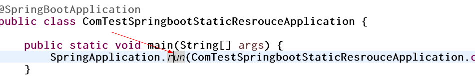
然后经过几个run方法
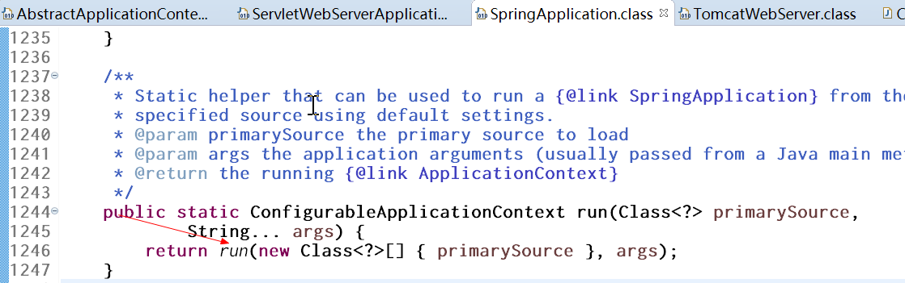
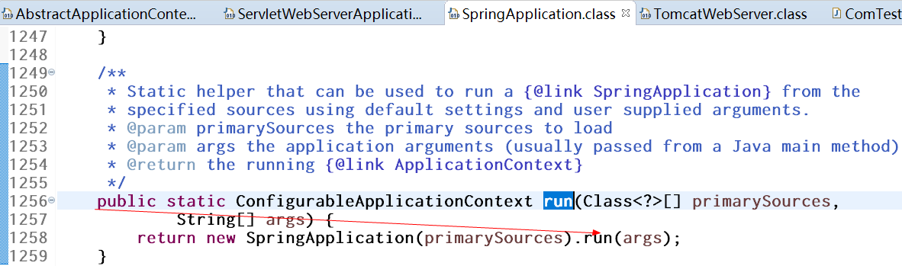
- 进入创建IOC容器对象。refreshContext(context);SpringBoot刷新IOC容器【创建IOC容器对象，并初始化容器，创建容器中的每一个组件】
public class SpringApplication {
/**
* Run the Spring application, creating and refreshing a new
* {@link ApplicationContext}.
* @param args the application arguments (usually passed from a Java main method)
* @return a running {@link ApplicationContext}
*/
public ConfigurableApplicationContext run(String... args) {
StopWatch stopWatch = new StopWatch();
stopWatch.start();
ConfigurableApplicationContext context = null;
Collection<SpringBootExceptionReporter> exceptionReporters = new ArrayList<>();
configureHeadlessProperty();
SpringApplicationRunListeners listeners = getRunListeners(args);
listeners.starting();
try {
ApplicationArguments applicationArguments = new DefaultApplicationArguments(
args);
ConfigurableEnvironment environment = prepareEnvironment(listeners,
applicationArguments);
configureIgnoreBeanInfo(environment);
Banner printedBanner = printBanner(environment);
context = createApplicationContext();
exceptionReporters = getSpringFactoriesInstances(
SpringBootExceptionReporter.class,
new Class[] { ConfigurableApplicationContext.class }, context);
prepareContext(context, environment, listeners, applicationArguments,
printedBanner);
//在这里调用了refreshContext（）方法。创建IOC容器
refreshContext(context);
afterRefresh(context, applicationArguments);
stopWatch.stop();
if (this.logStartupInfo) {
new StartupInfoLogger(this.mainApplicationClass)
.logStarted(getApplicationLog(), stopWatch);
}
listeners.started(context);
callRunners(context, applicationArguments);
}
catch (Throwable ex) {
handleRunFailure(context, ex, exceptionReporters, listeners);
throw new IllegalStateException(ex);
}
try {
listeners.running(context);
}
catch (Throwable ex) {
handleRunFailure(context, ex, exceptionReporters, null);
throw new IllegalStateException(ex);
}
return context;
}
// 创建IOC容器
private void refreshContext(ConfigurableApplicationContext context) {
refresh(context);
if (this.registerShutdownHook) {
try {
context.registerShutdownHook();
}
catch (AccessControlException ex) {
// Not allowed in some environments.
}
}
}
/**
* Refresh the underlying {@link ApplicationContext}.
* @param applicationContext the application context to refresh
*/
protected void refresh(ApplicationContext applicationContext) {
Assert.isInstanceOf(AbstractApplicationContext.class, applicationContext);
((AbstractApplicationContext) applicationContext).refresh();
}
}
在AbstractApplicationContext的类中onRefresh()方法就是去创建servlet容器工厂的。
public abstract class AbstractApplicationContext extends DefaultResourceLoader
implements ConfigurableApplicationContext {
@Override
public void refresh() throws BeansException, IllegalStateException {
synchronized (this.startupShutdownMonitor) {
// Prepare this context for refreshing.
prepareRefresh();
// Tell the subclass to refresh the internal bean factory.
ConfigurableListableBeanFactory beanFactory = obtainFreshBeanFactory();
// Prepare the bean factory for use in this context.
prepareBeanFactory(beanFactory);
try {
// Allows post-processing of the bean factory in context subclasses.
postProcessBeanFactory(beanFactory);
// Invoke factory processors registered as beans in the context.
invokeBeanFactoryPostProcessors(beanFactory);
// Register bean processors that intercept bean creation.
registerBeanPostProcessors(beanFactory);
// Initialize message source for this context.
initMessageSource();
// Initialize event multicaster for this context.
initApplicationEventMulticaster();
// Initialize other special beans in specific context subclasses.
// 调用了自己方法，然后创建webserver容器工厂
onRefresh();
// Check for listener beans and register them.
registerListeners();
// Instantiate all remaining (non-lazy-init) singletons.
// 这个方法是去创建我们自己写的不是懒加载的单例对象
finishBeanFactoryInitialization(beanFactory);
// Last step: publish corresponding event.
finishRefresh();
}
catch (BeansException ex) {
if (logger.isWarnEnabled()) {
logger.warn("Exception encountered during context initialization - " +
"cancelling refresh attempt: " + ex);
}
// Destroy already created singletons to avoid dangling resources.
destroyBeans();
// Reset 'active' flag.
cancelRefresh(ex);
// Propagate exception to caller.
throw ex;
}
finally {
// Reset common introspection caches in Spring's core, since we
// might not ever need metadata for singleton beans anymore...
resetCommonCaches();
}
}
}
}
在这个类中调用了onRefresh方法。去调用的父类的onRefresh()，同是调用了createWebServer(),创建了servlet的容器工厂getWebServerFactory。
public class ServletWebServerApplicationContext extends GenericWebApplicationContext
implements ConfigurableWebServerApplicationContext {
@Override
protected void onRefresh() {
super.onRefresh();
try {
// 创建Servlet的容器工厂
createWebServer();
}
catch (Throwable ex) {
throw new ApplicationContextException("Unable to start web server", ex);
}
}
private void createWebServer() {
WebServer webServer = this.webServer;
ServletContext servletContext = getServletContext();
if (webServer == null && servletContext == null) {
//创建了servlet容器工厂。
ServletWebServerFactory factory = getWebServerFactory();
// 创建了对应的servlet容器
this.webServer = factory.getWebServer(getSelfInitializer());
}
else if (servletContext != null) {
try {
getSelfInitializer().onStartup(servletContext);
}
catch (ServletException ex) {
throw new ApplicationContextException("Cannot initialize servlet context",
ex);
}
}
initPropertySources();
}
/**
* Returns the {@link ServletWebServerFactory} that should be used to create the
* embedded {@link WebServer}. By default this method searches for a suitable bean in
* the context itself.
* @return a {@link ServletWebServerFactory} (never {@code null})
*/
protected ServletWebServerFactory getWebServerFactory() {
// Use bean names so that we don't consider the hierarchy
String[] beanNames = getBeanFactory()
.getBeanNamesForType(ServletWebServerFactory.class);
if (beanNames.length == 0) {
throw new ApplicationContextException(
"Unable to start ServletWebServerApplicationContext due to missing "
+ "ServletWebServerFactory bean.");
}
if (beanNames.length > 1) {
throw new ApplicationContextException(
"Unable to start ServletWebServerApplicationContext due to multiple "
+ "ServletWebServerFactory beans : "
+ StringUtils.arrayToCommaDelimitedString(beanNames));
}
return getBeanFactory().getBean(beanNames[0], ServletWebServerFactory.class);
}
}
在这里将嵌入式的tomcat的工厂的设置配置和启动嵌入式的tomcat.
public class TomcatServletWebServerFactory extends AbstractServletWebServerFactory
implements ConfigurableTomcatWebServerFactory, ResourceLoaderAware {
@Override
public WebServer getWebServer(ServletContextInitializer... initializers) {
Tomcat tomcat = new Tomcat();
File baseDir = (this.baseDirectory != null) ? this.baseDirectory
: createTempDir("tomcat");
tomcat.setBaseDir(baseDir.getAbsolutePath());
Connector connector = new Connector(this.protocol);
tomcat.getService().addConnector(connector);
customizeConnector(connector);
tomcat.setConnector(connector);
tomcat.getHost().setAutoDeploy(false);
configureEngine(tomcat.getEngine());
for (Connector additionalConnector : this.additionalTomcatConnectors) {
tomcat.getService().addConnector(additionalConnector);
}
prepareContext(tomcat.getHost(), initializers);
return getTomcatWebServer(tomcat);
}
/**
* Factory method called to create the {@link TomcatWebServer}. Subclasses can
* override this method to return a different {@link TomcatWebServer} or apply
* additional processing to the Tomcat server.
* @param tomcat the Tomcat server.
* @return a new {@link TomcatWebServer} instance
*/
protected TomcatWebServer getTomcatWebServer(Tomcat tomcat) {
return new TomcatWebServer(tomcat, getPort() >= 0);
}
}
得到tomcat，然后启动。
public class TomcatWebServer implements WebServer {
public TomcatWebServer(Tomcat tomcat) {
this(tomcat, true);
}
/**
* Create a new {@link TomcatWebServer} instance.
* @param tomcat the underlying Tomcat server
* @param autoStart if the server should be started
*/
public TomcatWebServer(Tomcat tomcat, boolean autoStart) {
Assert.notNull(tomcat, "Tomcat Server must not be null");
this.tomcat = tomcat;
this.autoStart = autoStart;
initialize();
}
private void initialize() throws WebServerException {
TomcatWebServer.logger
.info("Tomcat initialized with port(s): " + getPortsDescription(false));
synchronized (this.monitor) {
try {
addInstanceIdToEngineName();
Context context = findContext();
context.addLifecycleListener((event) -> {
if (context.equals(event.getSource())
&& Lifecycle.START_EVENT.equals(event.getType())) {
// Remove service connectors so that protocol binding doesn't
// happen when the service is started.
removeServiceConnectors();
}
});
// Start the server to trigger initialization listeners
this.tomcat.start();
// We can re-throw failure exception directly in the main thread
rethrowDeferredStartupExceptions();
try {
ContextBindings.bindClassLoader(context, context.getNamingToken(),
getClass().getClassLoader());
}
catch (NamingException ex) {
// Naming is not enabled. Continue
}
// Unlike Jetty, all Tomcat threads are daemon threads. We create a
// blocking non-daemon to stop immediate shutdown
startDaemonAwaitThread();
}
catch (Exception ex) {
stopSilently();
throw new WebServerException("Unable to start embedded Tomcat", ex);
}
}
}
}
TomcatServletWebServerFactory创建对象，后置处理器一看是这个对象，就获取所有的定制器来先定制Servlet容器的相关配置；
使用容器工厂获取嵌入式的Servlet容器：this.webServer = factory.getWebServer(getSelfInitializer());
嵌入式的Servlet容器创建对象并启动Servlet容器；
先启动嵌入式的Servlet容器，再将ioc容器中剩下没有创建出的对象获取出来；
IOC容器启动创建嵌入式的Servlet容器
9、使用外置的Servlet容器
嵌入式Servlet容器：应用打成可执行的jar
优点：简单、便携；
缺点：默认不支持JSP、优化定制比较复杂（使用定制器【ServerProperties、自定义EmbeddedServletContainerCustomizer】，自己编写嵌入式Servlet容器的创建工厂【EmbeddedServletContainerFactory】）；
外置的Servlet容器：外面安装Tomcat—应用war包的方式打包；
步骤
1、必须创建一个war项目；（利用idea创建好目录结构）
2、将嵌入式的Tomcat指定为provided；
<dependency>
<groupId>org.springframework.boot</groupId>
<artifactId>spring-boot-starter-tomcat</artifactId>
<scope>provided</scope>
</dependency>
3、必须编写一个SpringBootServletInitializer的子类，并调用configure方法
public class ServletInitializer extends SpringBootServletInitializer {
@Override
protected SpringApplicationBuilder configure(SpringApplicationBuilder application) {
//传入SpringBoot应用的主程序
return application.sources(SpringBoot04WebJspApplication.class);
}
}
4、启动服务器就可以使用
原理
jar包：执行SpringBoot主类的main方法，启动ioc容器，创建嵌入式的Servlet容器；
war包：启动服务器，服务器启动SpringBoot应用【SpringBootServletInitializer】，启动ioc容器；
servlet3.0（Spring注解版）：
8.2.4 Shared libraries / runtimes pluggability：
规则：
1、服务器启动（web应用启动）会创建当前web应用里面每一个jar包里面ServletContainerInitializer实例：
2、ServletContainerInitializer的实现放在jar包的META-INF/services文件夹下，有一个名为javax.servlet.ServletContainerInitializer的文件，内容就是ServletContainerInitializer的实现类的全类名
3、还可以使用@HandlesTypes，在应用启动的时候加载我们感兴趣的类；
流程：
1、启动Tomcat
2、org\springframework\spring-web\4.3.14.RELEASE\spring-web-4.3.14.RELEASE.jar!\META-INF\services\javax.servlet.ServletContainerInitializer
@HandlesTypes(WebApplicationInitializer.class)
public class SpringServletContainerInitializer implements ServletContainerInitializer {
/**
* Delegate the {@code ServletContext} to any {@link WebApplicationInitializer}
* implementations present on the application classpath.
* <p>Because this class declares @{@code HandlesTypes(WebApplicationInitializer.class)},
* Servlet 3.0+ containers will automatically scan the classpath for implementations
* of Spring's {@code WebApplicationInitializer} interface and provide the set of all
* such types to the {@code webAppInitializerClasses} parameter of this method.
* <p>If no {@code WebApplicationInitializer} implementations are found on the classpath,
* this method is effectively a no-op. An INFO-level log message will be issued notifying
* the user that the {@code ServletContainerInitializer} has indeed been invoked but that
* no {@code WebApplicationInitializer} implementations were found.
* <p>Assuming that one or more {@code WebApplicationInitializer} types are detected,
* they will be instantiated (and <em>sorted</em> if the @{@link
* org.springframework.core.annotation.Order @Order} annotation is present or
* the {@link org.springframework.core.Ordered Ordered} interface has been
* implemented). Then the {@link WebApplicationInitializer#onStartup(ServletContext)}
* method will be invoked on each instance, delegating the {@code ServletContext} such
* that each instance may register and configure servlets such as Spring's
* {@code DispatcherServlet}, listeners such as Spring's {@code ContextLoaderListener},
* or any other Servlet API componentry such as filters.
* @param webAppInitializerClasses all implementations of
* {@link WebApplicationInitializer} found on the application classpath
* @param servletContext the servlet context to be initialized
* @see WebApplicationInitializer#onStartup(ServletContext)
* @see AnnotationAwareOrderComparator
*/
@Override
public void onStartup(@Nullable Set<Class<?>> webAppInitializerClasses, ServletContext servletContext)
throws ServletException {
List<WebApplicationInitializer> initializers = new LinkedList<>();
if (webAppInitializerClasses != null) {
for (Class<?> waiClass : webAppInitializerClasses) {
// Be defensive: Some servlet containers provide us with invalid classes,
// no matter what @HandlesTypes says...
if (!waiClass.isInterface() && !Modifier.isAbstract(waiClass.getModifiers()) &&
WebApplicationInitializer.class.isAssignableFrom(waiClass)) {
try {
initializers.add((WebApplicationInitializer)
ReflectionUtils.accessibleConstructor(waiClass).newInstance());
}
catch (Throwable ex) {
throw new ServletException("Failed to instantiate WebApplicationInitializer class", ex);
}
}
}
}
if (initializers.isEmpty()) {
servletContext.log("No Spring WebApplicationInitializer types detected on classpath");
return;
}
servletContext.log(initializers.size() + " Spring WebApplicationInitializers detected on classpath");
AnnotationAwareOrderComparator.sort(initializers);
for (WebApplicationInitializer initializer : initializers) {
initializer.onStartup(servletContext);
}
}
}
Spring的web模块里面有这个文件：org.springframework.web.SpringServletContainerInitializer
3、SpringServletContainerInitializer将@HandlesTypes(WebApplicationInitializer.class)标注的所有这个类型的类都传入到onStartup方法的Set<Class<?>>；为这些WebApplicationInitializer类型的类创建实例；
4、每一个WebApplicationInitializer都调用自己的onStartup；
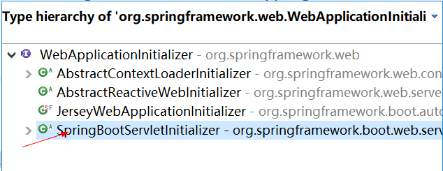
5、相当于我们的SpringBootServletInitializer的类会被创建对象，并执行onStartup方法
6、SpringBootServletInitializer实例执行onStartup的时候会createRootApplicationContext；创建容器
public abstract class SpringBootServletInitializer implements WebApplicationInitializer {
protected Log logger; // Don't initialize early
private boolean registerErrorPageFilter = true;
/**
* Set if the {@link ErrorPageFilter} should be registered. Set to {@code false} if
* error page mappings should be handled via the server and not Spring Boot.
* @param registerErrorPageFilter if the {@link ErrorPageFilter} should be registered.
*/
protected final void setRegisterErrorPageFilter(boolean registerErrorPageFilter) {
this.registerErrorPageFilter = registerErrorPageFilter;
}
@Override
public void onStartup(ServletContext servletContext) throws ServletException {
// Logger initialization is deferred in case an ordered
// LogServletContextInitializer is being used
this.logger = LogFactory.getLog(getClass());
WebApplicationContext rootAppContext = createRootApplicationContext(
servletContext);
if (rootAppContext != null) {
servletContext.addListener(new ContextLoaderListener(rootAppContext) {
@Override
public void contextInitialized(ServletContextEvent event) {
// no-op because the application context is already initialized
}
});
}
else {
this.logger.debug("No ContextLoaderListener registered, as "
+ "createRootApplicationContext() did not "
+ "return an application context");
}
}
protected WebApplicationContext createRootApplicationContext(
ServletContext servletContext) {
SpringApplicationBuilder builder = createSpringApplicationBuilder();
builder.main(getClass());
ApplicationContext parent = getExistingRootWebApplicationContext(servletContext);
if (parent != null) {
this.logger.info("Root context already created (using as parent).");
servletContext.setAttribute(
WebApplicationContext.ROOT_WEB_APPLICATION_CONTEXT_ATTRIBUTE, null);
builder.initializers(new ParentContextApplicationContextInitializer(parent));
}
builder.initializers(
new ServletContextApplicationContextInitializer(servletContext));
builder.contextClass(AnnotationConfigServletWebServerApplicationContext.class);
builder = configure(builder);
builder.listeners(new WebEnvironmentPropertySourceInitializer(servletContext));
SpringApplication application = builder.build();
if (application.getAllSources().isEmpty() && AnnotationUtils
.findAnnotation(getClass(), Configuration.class) != null) {
application.addPrimarySources(Collections.singleton(getClass()));
}
Assert.state(!application.getAllSources().isEmpty(),
"No SpringApplication sources have been defined. Either override the "
+ "configure method or add an @Configuration annotation");
// Ensure error pages are registered
if (this.registerErrorPageFilter) {
application.addPrimarySources(
Collections.singleton(ErrorPageFilterConfiguration.class));
}
// 执行run方法
return run(application);
}
五、Docker
1、简介
Docker是一个开源的应用容器引擎；是一个轻量级容器技术；
Docker支持将软件编译成一个镜像；然后在镜像中各种软件做好配置，将镜像发布出去，其他使用者可以直接使用这个镜像；
运行中的这个镜像称为容器，容器启动是非常快速的。


2、核心概念
docker主机(Host)：安装了Docker程序的机器(Docker直接安装在操作系统之上)
docker客户端(Client)：连接docker主机进行操作；
docker仓库(Registry)：用来保存各种打包好的软件镜像；
docker镜像(Images)：软件打包好的镜像；放在docker仓库中；
docker容器(Container)：镜像启动后的实例称为一个容器；容器是独立运行的一个或一组应用

使用Docker的步骤：
1）、安装Docker
2）、去Docker仓库找到这个软件对应的镜像
3）、使用Docker运行这个镜像，这个镜像就会生成一个Docker容器
4）、对容器的启动停止就是对软件的启动停止